You have seven major topics in these notes, but they're all connected. Rather than memorizing every paragraph, I want you to understand the legal decisions a court must make when determining who gets an inheritance.
Imagine a father dies, leaving ₱120 million, four children, and a will that excludes one of them.
The court must answer five questions:
That is the central logic of your entire lecture.
I recommend spending more time solving inheritance problems than repeatedly reading the complete lecture.
| Topic | Study time |
|---|---|
| Disinheritance: requisites and statutory grounds | 55 min |
| Ineffectual disinheritance, reconciliation, and computations | 55 min |
| Intestate succession and priority of heirs | 50 min |
| Representation and repudiation | 50 min |
| Iron Curtain, controlling cases, and mixed problems | 50 min |
| Final active recall | 40 min |
| Total | 5 hours |
Important correction before we begin: Your notes contain an outdated interpretation of Article 992. In Aquino v. Aquino, the Supreme Court recognized that nonmarital children can inherit from their direct ascendants, including legitimate grandparents, by right of representation. The older rule in your notes categorically excluding the illegitimate child of a legitimate parent from representing that parent is no longer controlling.
We'll use the codal provisions together with this controlling interpretation, while preserving the distinctions your professor emphasized.
Here's the simplest way to understand it.
Suppose you are a father with ₱10 million and two legitimate children.
You are angry with one child because they married someone you dislike.
Can you write a will giving everything to the other child?
No. You cannot arbitrarily deprive a compulsory heir of the legitime.
But suppose your child severely maltreats you. That may constitute a statutory ground for disinheritance under Article 919(6).
Disinheritance is the law's exceptional permission to deprive a compulsory heir of the legitime for a legally specified cause.
This creates the distinction:
| Situation | Legal consequence |
|---|---|
| Father dislikes child's spouse | Not a statutory ground |
| Child gravely maltreats father | Possible ground under Art. 919(6) |
| Child is omitted from the will | Analyze preterition, Art. 854 |
| Child is expressly excluded without legal cause | Ineffectual disinheritance, Art. 918 |
For your exam, memorize these seven checkpoints:
The first five are especially important for applying Articles 915–918. The unconditional and total requirements describe the nature of disinheritance as taught in your lecture.
Article 917: When the disinherited heir denies the truth of the alleged cause, the other heirs must prove it.
Example: The will says, "I disinherit my son because he physically assaulted me."
The son denies the assault.
Who must establish that it happened?
The other heirs who seek to sustain the disinheritance—not the disinherited son.
Memory aid: Heirs benefiting from disinheritance bear the burden of proving the disputed cause.
You have three sets of grounds:
Many overlap. Memorize the common grounds first, then the grounds unique to each class.
| No. | Ground | Key exam trigger |
|---|---|---|
| 1 | Found guilty of an attempt against the life of the testator or specified family members | Conviction |
| 2 | Accused testator of a crime punishable by 6+ years, accusation found groundless | Groundless accusation |
| 3 | Convicted of adultery or concubinage with testator's spouse | Conviction |
| 4 | Fraud, violence, intimidation, or undue influence concerning a will | Testamentary coercion |
| 5 | Refusal without justifiable cause to support the testator | Unjustifiable refusal |
| 6 | Maltreatment of testator by word or deed | Abuse |
| 7 | Leading a dishonorable or disgraceful life | Course of conduct |
| 8 | Conviction of a crime carrying civil interdiction | Accessory penalty |
Source: Article 919, Civil Code.
Three distinctions your professor can easily test
Distinction 1: Attempt against life vs. maltreatment
A son attempts to kill his father, but the father refuses to prosecute.
Can the father disinherit him?
Under Article 919(1), the requirement that the heir be found guilty has not been satisfied.
However, the father may invoke Article 919(6) for maltreatment by deed, provided the conduct and other requisites are established.
Remember:
Attempt on life under (1) = conviction. Maltreatment under (6) = no criminal conviction required.
Distinction 2: Acquittal vs. groundless accusation
A daughter accuses her father of a serious crime, and the father is acquitted because the evidence was insufficient.
Can he automatically disinherit her?
No. Acquittal does not necessarily establish that the accusation was false or groundless. Groundlessness must be established; do not assume it merely because there was an acquittal.
Distinction 3: Isolated misconduct vs. dishonorable life
A son commits a single embarrassing indiscretion.
Is that automatically enough under Article 919(7)?
No. The ground concerns leading a dishonorable or disgraceful life. Your professor emphasizes a continuing pattern of conduct, not simply one act of disobedience.
Also remember: social disapproval alone does not prove this ground.
These grounds largely mirror those applicable to children.
| No. | Ground | Important difference |
|---|---|---|
| 1 | Abandonment; inducing daughters into a corrupt or immoral life; attempts against their virtue | Special to parents |
| 2 | Conviction of attempt against life of specified relatives | Conviction required |
| 3 | False accusation of serious crime | Similar to Art. 919(2) |
| 4 | Conviction of adultery or concubinage with testator's spouse | Conviction required |
| 5 | Fraud, violence, intimidation, or undue influence concerning will | Similar to Art. 919(4) |
| 6 | Loss of parental authority for statutory causes | Special to parents |
| 7 | Unjustifiable refusal to support descendants | Similar to Art. 919(5) |
| 8 | Attempt by one parent against the life of the other, unless they reconcile | Special reconciliation exception |
The most important Article 920 problem
A father attempts to kill the mother. Their child is the testator.
Which ground applies?
Memorize: Reconciliation between the parents under Article 920(8) is different from reconciliation between the testator and offending heir under Article 922.
Only six grounds:
| No. | Ground |
|---|---|
| 1 | Conviction for attempt against life of testator or specified relatives |
| 2 | False accusation of a crime punishable by 6+ years |
| 3 | Fraud, violence, intimidation, or undue influence concerning the will |
| 4 | Giving cause for legal separation |
| 5 | Giving grounds for loss of parental authority |
| 6 | Unjustifiable refusal to support the children or the other spouse |
Focus on Article 921(4).
Under Article 55 of the Family Code, causes for legal separation include serious abusive conduct, sexual infidelity, drug addiction or habitual alcoholism, bigamous marriage, an attempt against the petitioner's life, and unjustified abandonment for more than one year, among others.
The exam distinction is:
The statutory grounds in Article 55 contain older terminology, but they should be quoted accurately when reciting the provision.
This is easier than it looks.
A father validly disinherits his son for maltreatment. Years later, they genuinely reconcile.
Does the father have to execute a new will to restore the son's rights?
No. Article 922 renders the earlier disinheritance ineffectual.
| When reconciliation happens | Effect |
|---|---|
| Before disinheritance | Testator loses the right to disinherit for that offense |
| After valid disinheritance | Disinheritance becomes ineffectual |
| Mere unilateral forgiveness without reconciliation | Does not necessarily satisfy Art. 922 |
Article 922 requires subsequent reconciliation between the offender and offended person. Your professor distinguishes this from unilateral deathbed forgiveness.
Exam trap: A testator's general expression of forgiveness, without evidence of reconciliation, is not automatically the same as Article 922 reconciliation.
For the conditional-lifting illustration in your notes, remember your professor's distinction between an unconditional disinheritance for an existing cause and a condition purporting to lift it. In applying Article 922 itself, however, do not substitute a mere future promise of reform for actual reconciliation.
This is where disinheritance connects with representation.
Article 923 provides that children and descendants of the disinherited heir take that heir's place and preserve compulsory-heir rights concerning the legitime.
The punishment is personal to the disinherited heir. His children do not automatically suffer the forfeiture.
Also, the disinherited parent cannot exercise usufruct or administration over the property constituting the children's inherited legitime.
Remember this rule: Parent loses, descendants may represent.
Your professor's ₱120-million examples are especially valuable because they show how two defects in a will produce different consequences.
First, understand the difference.
| Ineffectual disinheritance | Preterition | |
|---|---|---|
| Provision | Art. 918 | Art. 854 |
| Central problem | Compulsory heir is expressly disinherited without valid cause | Compulsory heir in direct line is completely omitted, subject to recognized exceptions |
| Effect on institution of heirs | Annulled only insofar as it prejudices the disinherited heir | Generally annulled in its entirety |
| Legitime | Must be restored | Rights determined after applying preterition and surviving dispositions |
| Possible outcome | Heir may recover only legitime | Larger intestate share may result |
Assume X leaves four legitimate children, A, B, C, and D. There is no spouse, no other compulsory heir, and no other testamentary disposition affecting the computation.
The collective legitime is:
With four children's legitime shares:
Thus, each child's initial legitime is ₱15 million.
The will says:
"I disinherit D. I institute A and B as my sole heirs."
Two problems:
The institution of A and B is annulled because of preterition. With no other effective disposition, intestacy governs the whole estate.
Key: D gets ₱30M, not merely ₱15M, because the entire estate ultimately passes through intestacy.
The will says:
"I disinherit D. I institute A, B, and C as my heirs."
Here, D was mentioned. There is no preterition of any child.
D's disinheritance fails, but the institution of A, B, and C remains valid to the extent that it does not impair D's legitime.
D receives ₱15M. The other ₱105M is distributed equally among A, B, and C.
A, B, C = ₱15M legitime + ₱20M from the remaining disposable portion. D = ₱15M legitime.
Here, D was validly disinherited, and the estate was given to A, B, and C.
| Heir | D has no descendants | D has two children representing him |
|---|---|---|
| A | ₱40M | ₱35M |
| B | ₱40M | ₱35M |
| C | ₱40M | ₱35M |
| D | ₱0 | ₱0 |
| D1 | — | ₱7.5M |
| D2 | — | ₱7.5M |
| Total | ₱120M | ₱120M |
Why? Where D has descendants, they represent D for his ₱15M legitime under Article 923, sharing ₱7.5M each. Where D has none, the remaining three children receive the estate under the will.
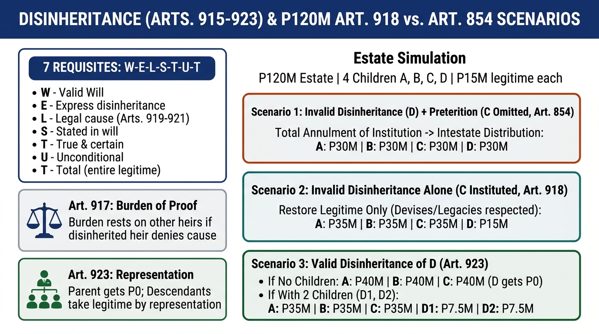
These are excellent problems to practice until you can solve them without looking at the table.
Intestate succession is based on the law's presumed choice of heirs.
The most useful principle to remember is:
Inheritance generally descends first, ascends next, and then spreads sideways.
This illustrates the preference of lines, not an absolute rule that every lower category is excluded. Illegitimate children and the surviving spouse have important statutory rights of concurrence.
Rule of Proximity — Article 962
The nearer relative generally excludes the more distant relative, except where representation applies.
Example: A son generally excludes his own son (the decedent's grandson).
Order of Intestate Succession — Articles 978–1014
Statutory priority can override mere closeness in degree.
Example:
X dies without descendants, ascendants, or a spouse. Survivors are:
Who inherits?
Nephew B, because nephews and nieces belong to the privileged collateral class, which precedes uncles and aunts.
Memory: Statutory class first; degree second.
Your professor distinguishes the order applicable to a legitimate decedent from the order applicable to an illegitimate decedent.
Study this as a priority guide rather than a rule that higher-ranked heirs always exclude everyone below them.
| Priority | Regular order | Irregular order |
|---|---|---|
| 1 | Legitimate children and descendants | Legitimate children and descendants |
| 2 | Legitimate parents and ascendants | Illegitimate children and descendants |
| 3 | Illegitimate children and descendants | Illegitimate parents |
| 4 | Surviving spouse | Surviving spouse |
| 5 | Siblings, nephews, nieces | Siblings, nephews, nieces where succession is legally permitted |
| 6 | Other collaterals through 5th degree | State, in default of entitled heirs |
| 7 | State | — |
In the regular order, illegitimate children may concur with legitimate parents despite the ranking. In both orders, the surviving spouse has specially prescribed rights. Apply the relevant concurrence provisions rather than distributing solely by rank.
| Surviving heirs | Basic intestate rule |
|---|---|
| Legitimate children + surviving spouse | Spouse receives the same share as each legitimate child, Art. 996 |
| Legitimate ascendants + spouse | 1/2 ascendants, 1/2 spouse, Art. 997 |
| Illegitimate children + spouse, without other competing classes | 1/2 children, 1/2 spouse, Art. 998 |
| Legitimate ascendants + illegitimate children, no spouse | 1/2 ascendants, 1/2 illegitimate children, Art. 991 |
| Legitimate ascendants + illegitimate children + spouse | 1/2 ascendants, 1/4 illegitimate children, 1/4 spouse, Art. 1000 |
| Spouse + siblings/nephews/nieces, no descendants or ascendants | 1/2 spouse, 1/2 collateral class, Art. 1001 |
Also remember: when legitimate and illegitimate children concur, the illegitimate child's individual share is generally one-half of a legitimate child's share, subject to the applicable distribution rules.
X dies intestate with ₱12 million. Survivors are:
Under Article 996, everyone gets the same share.
Therefore, A = ₱4M, B = ₱4M, S = ₱4M.
Picture a grandfather who dies leaving two sons.
But one son died before the grandfather.
Would it be fair to give the whole estate to the surviving son and completely exclude the deceased son's children?
The law allows those grandchildren to step into their deceased father's place.
This is representation.
Technical rule: Article 970 creates a legal fiction by which the representative is raised to the place and degree of the person represented.
Crucially, under Article 971, the representative inherits directly from the decedent, not through the person represented.
These two terms are extremely testable.
X dies, leaving:
The estate is divided into two branches:
Never divide by the number of grandchildren first when representation applies. First determine the parent's share.
| Line | Representation? |
|---|---|
| Direct descending | Yes, continuously through successive generations |
| Direct ascending | Never |
| Collateral | Only in favor of children of brothers or sisters |
| Great-nephews and great-nieces | No collateral representation under Art. 972 |
Article 975: Nephews and nieces inherit per stirpes when they concur with an uncle or aunt who is a sibling of the decedent. If only nephews and nieces survive within that privileged class, they inherit in equal shares.
This is another crucial distinction.
| Testate succession | Intestate succession | |
|---|---|---|
| Representation protects | Legitime | Entire intestate share |
| Typical causes | Predecease, incapacity, valid disinheritance | Predecease, incapacity |
| Free portion specifically given by will | Not automatically transmitted through representation | Not applicable as a separate testamentary gift |
These provisions look contradictory, but they are not.
Article 977: A repudiating heir cannot be represented.
X dies, leaving A and B. B has a son C.
B renounces X's inheritance.
Can C represent B?
No. B is alive and has repudiated. C cannot simply step into B's place.
Article 976: A person may represent someone whose own inheritance he previously renounced.
Father B dies first. Son C renounces B's estate.
Later, Grandfather X dies.
Can C represent his predeceased father B in X's estate?
Yes! C inherits directly from X, not from B's estate.
Memory aid
977 — Repudiator cannot BE represented.
976 — You CAN represent someone whose estate you previously rejected.
Suppose X's three children all repudiate, leaving five grandchildren.
The grandchildren cannot represent repudiating parents. But because every nearest-degree heir repudiated, the next degree may inherit in its own right.
If the net estate is ₱300M, each of the five equally entitled grandchildren receives:
This is per capita, not per stirpes.
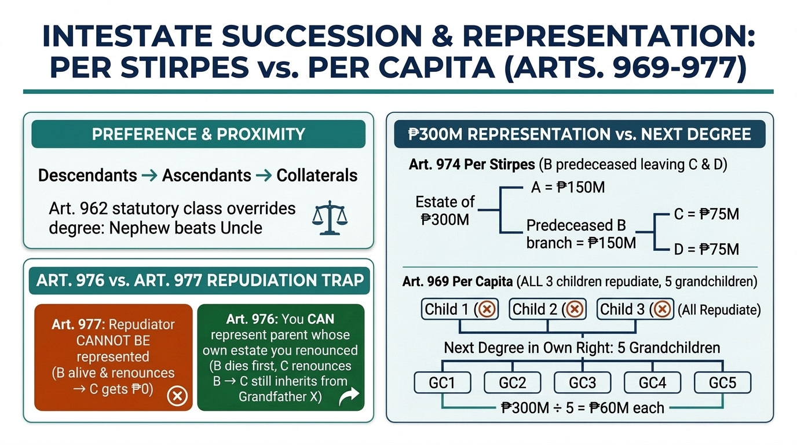
Under Article 992, the Civil Code restricts intestate succession between illegitimate children and the legitimate relatives of their parents.
But its interpretation changed substantially in Aquino v. Aquino.
The controlling distinction is now:
| Situation | Rule |
|---|---|
| Nonmarital grandchild represents predeceased parent in grandparent's estate | Allowed, regardless of parent's marital status, subject to proof of filiation and other requisites |
| Illegitimate person attempts to inherit in own right from parent's legitimate collateral relatives | Article 992's bar generally remains applicable |
| Direct inheritance from one's own parent | Article 992 does not bar it |
| Inheritance under a valid will | Article 992's intestate prohibition does not itself prevent testamentary gifts |
The Supreme Court expressly limited its Aquino ruling to the right of representation in the direct line. It did not comprehensively abolish Article 992.
X has two predeceased children:
Under the older doctrine in your lecture, D would have been barred from representing A.
Under Aquino, D is not disqualified solely because of illegitimate status. Both C and D may qualify to represent A. Likewise, E and F may qualify to represent B.
The amount received by each representative still requires applying the relevant rules on legitime, branch allocation, and the heirs' respective status. Do not assume that recognizing representation automatically gives every heir an identical amount.
Your notes state that an adopted child cannot represent the adopter in the succession of the adopter's parents.
That blanket statement is outdated for adoptions governed by R.A. No. 11642. Section 41 extends adoptive filiation to the adopter's parents, legitimate siblings, and legitimate descendants, while Section 43 addresses reciprocal succession between adopter and adoptee. The former doctrine should therefore not be memorized as an absolute rule under current adoption law.
This case is one of the easiest to remember once you understand the order of deaths.
Dela Merced v. Dela Merced
Evarista died first. Her legitimate brother Francisco inherited a share of her estate.
Francisco subsequently died. His illegitimate son Joselito claimed inheritance rights over Francisco's property, including the share Francisco had already inherited from Evarista.
The other heirs objected, invoking Article 992.
Supreme Court ruling: Joselito could inherit from Francisco. Article 777 had already vested Evarista's inheritance in Francisco at Evarista's death. Joselito was therefore inheriting from his father, not directly from Evarista by representation.
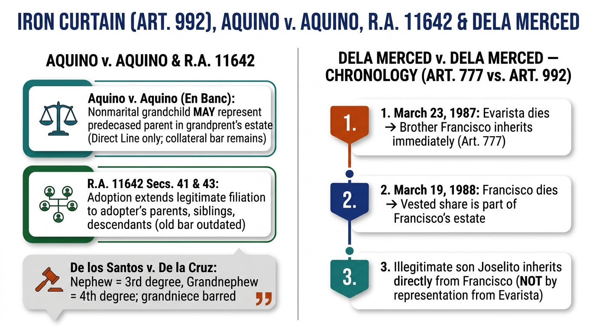
Memory rule:
The exact order of death changes the legal analysis.
| Article | Recall immediately |
|---|---|
| 915 | Disinheritance only for causes expressly provided by law |
| 916 | Legal cause must be specified in will |
| 917 | Other heirs prove disputed cause |
| 918 | Ineffectual disinheritance; institution impaired only as necessary |
| 919 | Eight grounds — children/descendants |
| 920 | Eight grounds — parents/ascendants |
| 921 | Six grounds — spouse |
| 922 | Reconciliation defeats disinheritance |
| 923 | Descendants preserve legitime through representation |
| 962 | Proximity of degree |
| 969 | All nearest heirs repudiate → next degree inherits in own right |
| 970–971 | Representation; succession directly from decedent |
| 972 | Descending, not ascending; collateral limitation |
| 974 | Per stirpes |
| 975 | Nephews/nieces representation vs. equal shares |
| 976 | May represent someone whose estate you repudiated |
| 977 | Repudiating heir cannot be represented |
| 982 | Grandchildren's representation |
| 992 | Iron Curtain, qualified by Aquino |
| 777 | Rights transmitted upon death |
Answer these without checking your notes. The goal is to train you to recognize the controlling provision quickly.
The strongest preparation is not memorizing every sentence. It is recognizing the trigger word in a factual problem:
Of all the material here, I would prioritize mastering the ₱120M three-scenario problem, Articles 918 vs. 854, Articles 976 vs. 977, and Articles 992 vs. 777. They force you to apply multiple rules instead of merely reciting definitions.
| Mnemonic | Source | Rule & Articles |
|---|---|---|
W–E–L–S–T–U–T |
Lecture | 7 Disinheritance Checkpoints (Arts. 915–918): Valid Will, Express, Legal cause, Stated, True & certain, Unconditional, Total deprivation of legitime. |
| 977 vs. 976 | Lecture | 977 — Repudiator cannot BE represented; 976 — You CAN represent someone whose own estate you previously rejected. |
| Parent loses, descendants may represent | Lecture | Art. 923: Disinherited heir gets ₱0 and loses parental usufruct/administration, while descendants inherit the legitime. |
Class First, Degree Second |
Study Aid | Art. 962 & Arts. 978–1014: Privileged collateral class (nephew, 3rd deg.) defeats non-privileged collateral (uncle, 3rd deg.). |
We have 36 articles, but we do not need to memorize 36 disconnected rules. Instead, understand five questions that determine almost every problem in this chapter.
Once you can answer these, most legacies and devises questions become manageable.
Imagine a father dies leaving a net hereditary estate worth ₱10 million.
In his will, he makes these dispositions:
"I give one-half of my estate to Ana. I give my Toyota Fortuner to Ben. I give my house in Baguio to Carlo."
Are all three beneficiaries heirs in the same legal sense?
No.
| Beneficiary | What was given? | Classification |
|---|---|---|
| Ana | One-half of the estate | Instituted heir |
| Ben | Toyota Fortuner | Legatee |
| Carlo | Baguio house | Devisee |
The simplest distinction:
Under Art. 924, things and rights within the commerce of man may be bequeathed or devised. These dispositions must respect the legitimes of compulsory heirs.
Recall Art. 854 from your earlier lesson.
If a compulsory heir in the direct line is preterited:
Thus, a will may suffer preterition without every individual gift automatically disappearing.
This was reaffirmed in Trinidad v. Trinidad, where the Court preserved the principle that valid legacies and devises can survive preterition, subject to the compulsory heirs' legitimes.
Remember: Institution of an heir is not the same as a particular testamentary gift.
Suppose the will says:
"My son Ana shall inherit the family business, but she must give ₱300,000 to my nephew."
The gift to the nephew is a sub-legacy, because the testator specifically imposed the obligation upon Ana.
There are two questions:
First: Who was charged?
If the testator identifies a specific heir, that heir alone bears the charge. If no heir is specifically charged, the heirs are liable in the proportion in which they inherit, subject to the applicable protections.
Second: How much can the burdened person be required to pay?
Ana receives:
Her father orders her to pay Ben ₱300,000.
How much must Ana pay?
Only ₱200,000, because the charge cannot invade her ₱500,000 legitime.
Ben is given a car worth ₱400,000, subject to an obligation to give Carlo ₱600,000.
Ben's maximum liability: ₱400,000.
He cannot be compelled under Art. 925 to pay a sub-legacy exceeding the value of the benefit received.
Suppose two heirs, Ana and Ben, take possession of an inherited piano that the testator specifically bequeathed to Carlo.
Ben negligently destroys it.
May Carlo demand the full liability from Ana despite Ana's innocence?
Yes. Article 927 makes co-heirs who take possession solidarily liable for the negligent loss or destruction of a bequeathed thing, even if only one was negligent.
Ana's right to seek reimbursement from Ben is a separate matter.
Suppose the testator leaves:
The first is a determinate legacy. The second is generic.
Under Article 928, the person obliged to deliver a generic thing is liable for eviction. The same statutory warranty is not imposed for a specific determinate gift merely because the testator's title fails.
Memory aid: Generic = warranty. Specific = generally no warranty.
This is probably the most fact-sensitive part of your material.
Before determining what a beneficiary receives, identify who owned the thing when the will was executed and what happened to it afterward.
Let's use a single car throughout.
The testator (T) writes:
"I leave the red Ferrari to my nephew, Leo (L)."
| Article | Situation | Result |
|---|---|---|
| 929 | T owns only half the Ferrari. | Generally, only T's half passes. |
| 930 | Ferrari belongs to a stranger, but T mistakenly believes he owns it. | Void, unless T later acquires it. |
| 931 | Ferrari belongs to a stranger, and T orders the estate to acquire it. | Estate must acquire it or pay its just value when acquisition cannot reasonably be secured under the article. |
| 932 | Ferrari already belongs to Leo when T executes the will. | Generally ineffective. |
| 933 | Ferrari originally belonged to a stranger, but Leo later acquires it. | Gratuitous acquisition: nothing. Onerous acquisition: reimbursement. |
Suppose T owns 50% of a condominium, and his sister owns the other 50%.
T simply writes:
"I devise my condominium to Leo."
What does Leo receive? Only T's 50% interest.
But suppose T expressly says:
"I devise the entire condominium to Leo, including the portion owned by my sister."
Now the situation changes. The express declaration makes the entirety the object of the gift, and the rules governing acquisition of another's property become relevant.
Memory aid: Partial ownership → Partial gift, unless entirety expressly intended.
There are three distinct scenarios.
The testator purported to devise a condominium that was actually registered in another person's name. The Supreme Court held that the devise was void under Article 930 and emphasized that the testamentary wording did not obligate the estate to acquire the condominium under Article 931.
Lesson: When answering a problem involving property owned by someone else, examine both the testator's mistake and the actual language of the will.
This distinction is easy to remember if you ask:
When did Leo become the owner?
Exam shortcut:
This entire cluster becomes easier if you distinguish the thing given from the obligation attached to it.
Father leaves his house to Ana. The house is mortgaged to a bank to secure a recoverable debt.
Does Ana automatically have to bear the secured debt?
Generally no. Under Art. 934, the estate must pay the recoverable debt unless the testator expresses a contrary intention.
But distinguish ordinary mortgages from other burdens.
| Burden on property | Who generally bears it? |
|---|---|
| Mortgage securing a recoverable debt | Estate pays, unless contrary intent |
| Pledge securing a recoverable debt | Estate pays, unless contrary intent |
| Easement | Passes with property |
| Existing usufruct | Passes with property until extinguished |
Think: Mortgage debt is generally discharged by the estate; other existing property burdens may remain attached.
Suppose T lends ₱500,000 to Ben.
T can make different testamentary dispositions.
| Testator's statement | Legal effect |
|---|---|
| "I give my ₱500,000 credit against Ben to Carlo." | Legacy of credit — Carlo succeeds to the assignable credit and corresponding rights. |
| "I forgive Ben's ₱500,000 debt." | Legacy of remission — the debt is released to the extent covered. |
| "I give ₱200,000 to my creditor, Ana." | Art. 938: Ordinarily an additional gift, not payment of the debt. |
| "Pay Ben ₱500,000, which I owe him," although T owes nothing. | Art. 939: Disposition deemed not written, subject to rules on natural obligations. |
Imagine T writes a will forgiving Ben's ₱500,000 debt.
Later, T files a judicial action demanding payment of that debt.
Does the remission survive?
No. Article 936 causes the legacy of remission to lapse.
Contrast this with merely sending Ben a demand letter, which does not itself satisfy the statutory requirement of bringing an action.
Remember:
Demand letter ≠ Judicial action.
Under Art. 937, a generic remission of debts covers debts existing when the will was executed, not debts incurred afterward.
Now we arrive at an extremely useful distinction.
Suppose T writes three gifts in his will.
| Gift | Is it valid despite absence from the estate? |
|---|---|
| Identified Toyota Fortuner owned by T but no longer in estate | Generally no, subject to applicable exceptions |
| Five dairy cows | Yes. Generic personal legacy remains valid. |
| Two hectares of farmland | No, if the estate has no immovable of the specified kind. |
This is the express distinction in Art. 941.
| Issue | Specific determinate thing belonging to T | Generic gift |
|---|---|---|
| Ownership | Acquired at testator's death | Particular thing becomes the beneficiary's upon specification/appropriate delivery |
| Fruits/income | Post-death fruits and specified uncollected income belong to beneficiary | From death only if T expressly ordered under Art. 949 |
| Risk of fortuitous loss | Beneficiary bears it from death | Ordinarily remains on the obligated party until individualization, subject to obligation rules |
| Delivery | The exact thing must be delivered | Appropriate thing of the required kind and quality |
T specifically devises a commercial building to Ana.
T dies January 1.
The building earns ₱50,000 rent for January.
On February 1, an earthquake destroys the building without anyone's fault.
Who gets the January rent? Who suffers the loss?
Answer: Ana gets the January rent and bears the building's fortuitous loss.
Under Article 948, ownership of the specifically determined property passes at death, together with the statutory fruits and income rights. Risk likewise passes at that time.
But if rent became due and unpaid before T died, that pre-death receivable belongs to the estate.
MEMORY ANCHOR
Specific thing: Death = Ownership + Fruits + Risk.
Generic thing: The obligation survives the absence of that specific object.
This is the most important computation topic in your material, and it contains an error worth correcting before your exam.
When the estate cannot satisfy all testamentary gifts, you must identify why there is a shortage.
Exam technique: Pay each higher category first. When available funds are exhausted, lower categories get nothing. If funds reach the final category but cannot pay everyone, divide what remains pro rata.
Assume no compulsory heirs, no other relevant dispositions, and the estate has ₱60,000 available for legacies after settlement of its debts and expenses.
| Legacy | Amount claimed |
|---|---|
| Remuneratory | ₱10,000 |
| Expressly preferential | ₱10,000 |
| Support | ₱15,000 |
| Education | ₱15,000 |
| Ordinary legacy X | ₱15,000 |
| Ordinary legacy Y | ₱5,000 |
| Total | ₱70,000 |
Available: ₱60,000.
First four categories receive ₱50,000 in total.
Remaining: ₱10,000.
X and Y are ordinary legatees with claims in a 3:1 ratio.
Therefore:
| Beneficiary | Actual payment |
|---|---|
| Remuneratory | ₱10,000 |
| Preferential | ₱10,000 |
| Support | ₱15,000 |
| Education | ₱15,000 |
| X | ₱7,500 |
| Y | ₱2,500 |
| TOTAL | ₱60,000 |
That is the Article 950 priority method.
Now assume a net hereditary estate of ₱100,000.
Compulsory heirs have an aggregate legitime of ₱50,000, leaving ₱50,000 available for free-portion gifts.
But the testator gives:
Total gifts: ₱100,000.
Those gifts would impair the protected legitime by ₱50,000.
Article 911: Reduce pro rata.
This example assumes neither gift is expressly preferential under Art. 911.
Two examples deserve caution:
Also, the mere existence of donations inter vivos does not automatically trigger Art. 911 reduction. Such donations must be considered in determining the legitime and disposable portion, but reduction depends on whether the law requires adjustment to protect the legitime.
Memory aid: Art. 911 = PROTECT. Art. 950 = PRIORITIZE.
These provisions are easier when connected to familiar obligations.
| Article | Rule | Exam trigger |
|---|---|---|
| 940 | Alternative gifts: choice generally belongs to the burdened heir or estate representative unless otherwise provided. | "Car or ₱500,000" |
| 941 | Generic personal legacy valid despite absence from estate; indeterminate real devise requires property of that kind in estate. | "Five cows" vs. "two hectares" |
| 942–943 | Expressly assigned choice follows the statute; a completed choice is irrevocable. | "The beneficiary may choose" |
| 944 | Education lasts through majority and, if diligently pursued, beyond it to finish the course; support generally lasts for life unless otherwise provided. | Education vs. lifetime support |
| 945 | Periodical pension installments become due at the beginning of each period; the beneficiary need not return payment if death occurs mid-period. | Monthly pension |
| 946 | Existing usufruct must be respected until legally extinguished. | Devise subject to usufruct |
Imagine the testator leaves these gifts to his nephew:
His nephew turns 18 while still studying law.
Does the educational legacy necessarily terminate at 18?
No. If the beneficiary diligently pursues the course, Art. 944 permits continuation beyond majority to finish it.
Support, by contrast, generally continues during the beneficiary's lifetime, unless the testator provided otherwise.
Suppose your aunt specifically devised a house to you.
You already know from Art. 948 that ownership is acquired upon death, subject to the legal rules.
Can you immediately go to the house, break the locks, and take possession?
No.
Under Art. 953, the legatee or devisee must request delivery from the person legally obligated to deliver, or from the executor or administrator when authorized by the court.
Ownership and physical possession are different things.
Also remember:
This is directly connected to the acceptance and repudiation lesson you just finished.
| Scenario | Rule |
|---|---|
| One legacy has a beneficial portion and an onerous portion. | Cannot accept the beneficial portion while repudiating the onerous part. |
| Two separate gifts, one onerous and one gratuitous. | Cannot reject the onerous gift while accepting the gratuitous one. |
| Two gifts, both gratuitous or both onerous. | May generally choose, unless the testator intended them to be inseparable. |
| Compulsory heir also receives a legacy. | May accept inheritance but renounce legacy, or vice versa. |
Example: T leaves Ben a resort burdened with an obligation to pay ₱100,000 annually to an orphanage, plus a separate unburdened car.
Ben says:
"I'll reject the resort and take only the car."
Not allowed under Art. 955. He is trying to reject the onerous legacy while keeping the gratuitous one.
Suppose T devises a commercial lot to Ana, but Ana predeceases T.
There is no substitute, and no right of accretion.
Does Ana's child automatically receive the lot through representation?
No. Do not automatically apply intestate representation to a voluntary legacy.
The ineffective devise generally merges into the mass of the estate, unless substitution or accretion applies.
This connects with Parish Priest of Victoria v. Rigor.
In that case, a conditional devise of ricelands intended for a qualifying male relative who would pursue the priesthood became inoperative. Because the required beneficiary situation did not materialize, the Court applied the rule on merging the ineffective devise into the estate.
Doctrine: A failed particular gift does not automatically go to the beneficiary's descendants; examine substitution, accretion, and ultimately the estate's succession rules.
Three events may cause a legacy or devise to become ineffective.
Imagine T devises a house to Ana, but later executes a conveyance that is subsequently annulled because of undue influence.
Did the purported alienation necessarily revoke the devise?
No. In Fernandez v. Dimagiba, the Court explained that an alienation resulting from vitiated consent need not signify a genuine change in the testator's intent.
Important distinction: Art. 957 expressly identifies reacquisition through the exercise of the right of repurchase as an exception. The treatment of vitiated-consent alienations comes from jurisprudence; involuntary execution sales require careful analysis rather than automatic application of the ordinary voluntary-alienation rule.
T writes:
"I leave my house at No. 759 to Ben."
But the house is actually No. 957, and the intended property is otherwise clearly identifiable.
The mistaken number does not invalidate the devise.
This is the principle of falsa demonstratio non nocet: an erroneous description does not defeat an otherwise ascertainable testamentary intention.
Who receives the money?
Under Art. 959, a disposition in general terms in favor of the testator's relatives is understood in favor of those nearest in degree.
Example: T is unmarried, has no children or surviving ascendants, and is survived by a brother and two nephews who are the children of that living brother.
The brother, being nearer in degree, takes under the general relatives clause rather than dividing the legacy with those nephews.
Exam distinction: A surviving spouse is not a blood relative merely by marriage, although the spouse's independent legitime rights remain protected.
Also, the fifth-degree collateral limitation in your notes comes from the rules on intestate collateral succession, not from the actual wording of Art. 959 itself. Do not substitute that limitation for the article's express nearest-degree test.
For a time-constrained exam review, these are the provisions I would prioritize:
| Article | Trigger | Answer |
|---|---|---|
| 925 | Burden on compulsory heir | Never invade legitime |
| 927 | Co-heirs possess; one negligent | Solidary liability |
| 929 | Partly owned thing | Only owned share, unless entirety expressed |
| 930 | Stranger-owned; testator mistaken | Void unless later acquired |
| 931 | Order to acquire stranger's property | Acquire or pay just value when permitted |
| 932–933 | Already owned / later acquired by legatee | Ineffective / reimbursement rules |
| 934 | Mortgaged property | Estate generally pays recoverable secured debt |
| 936 | Judicial action for debt | Credit/remission legacy lapses |
| 938 | Gift to creditor | Bonus unless expressly applied to credit |
| 941 | Generic movable vs. indeterminate realty | Movable valid even if absent; realty requires kind in estate |
| 948 | Specific thing | Ownership, fruits, risk from death |
| 950 | Insufficient for legacies | R-P-S-E-S-A |
| 953 | Legatee takes possession personally | Not allowed |
| 955 | Onerous and gratuitous gifts | Cannot reject onerous and keep gratuitous |
| 956 | Failed legacy | Merges, except substitution/accretion |
| 957 | Transformation, alienation, loss | T-A-L |
| 959 | Gift generally to relatives | Nearest degree |
One final way to remember this chapter: A legacy goes through a sequence of legal tests.
Identify the gift → Check ownership → Determine the obligor → Determine when rights vest → Test for failure or revocation → Protect legitimes → Apply payment priorities → Obtain lawful delivery.
If you can follow that sequence in a hypothetical, you can reason your way through most of Articles 924–959 even when you do not immediately remember the exact article number.
| Mnemonic | Source | Rule & Articles |
|---|---|---|
| Death = Ownership + Fruits + Risk | Lecture | Art. 948: Specific determinate thing belonging to T vests at death with post-death fruits and risk of fortuitous loss. |
R–P–S–E–S–A |
Lecture | Art. 950 payment order: Remuneratory, Preferential, Support, Education, Specific, All others pro rata. |
| Art. 911 = PROTECT; Art. 950 = PRIORITIZE | Lecture | Use Art. 911 when legitimes are impaired; use Art. 950 only when legitimes are intact and legacies compete over free-portion insufficiency. |
T–A–L |
Lecture | Art. 957 revocation/ineffectiveness: Transformation, Alienation, Loss. |
Demand Letter ≠ Judicial Action |
Study Aid | Art. 936: Only filing a judicial suit against the debtor revokes a legacy of credit/remission. |
Your lecture covers three major areas. Since we already studied capacity to succeed (Arts. 1024–1039), we'll concentrate on the earlier topics and the mathematical problems involving inheritance.
Spend most of that time understanding the ₱120 million examples. They connect several doctrines that your professor is likely to test together.
Imagine two people who each leave ₱120 million.
Father A dies without a will. Father B dies with a valid will giving ₱10 million to his friend and saying nothing about the rest of his estate.
How do we distribute their estates?
| Situation | Governing principle |
|---|---|
| A dies without a will | Pure intestate succession: the law distributes the entire estate. |
| B leaves a will disposing of only ₱10M | Mixed succession: the will governs the ₱10M gift; intestacy governs the undisposed portion, subject to compulsory heirs' legitimes. |
| A valid will disposes of the entire estate | Testate succession, subject to compulsory succession and other legal limitations. |
Here's the principle that ties the entire lecture together:
The testator's lawful intention prevails where expressed; the law supplies the distribution where no effective testamentary disposition exists. In both cases, compulsory heirs' legitimes must be protected.
Part I, Section I of your lecture
You do not need to memorize six long paragraphs. Instead, recognize four statutory situations.
| Trigger | Example |
|---|---|
| 1. No operative will | The decedent dies without a will, or the will is void or has lost validity. |
| 2. Incomplete disposition | The will disposes of only the house, leaving cash and other property undisposed. |
| 3. Failed institution | A suspensive condition attached to the institution fails. |
| 4. Vacant institution | An instituted heir predeceases, repudiates, or is incapacitated, without effective substitution or accretion. |
Article 960 states these situations in four paragraphs. Your lecture additionally discusses resolutory conditions and terms as doctrinal situations that may lead to further distribution.
Testator A leaves his house to C, provided C passes the 2025 Bar Examinations. He leaves his car to D, with E as substitute if D predeceases.
C fails the Bar. D predeceases A, and E repudiates the substituted gift.
What happens?
This is your first useful succession sequence:
Testamentary gift fails → Check substitution → Check accretion → Apply intestacy if neither operates.
In pure intestacy, we ordinarily distribute the entire net estate according to the rules on legal succession. We do not begin by reserving a separate testamentary free portion.
However, where compulsory heirs concur, their legitimes remain protected. This becomes especially important when legitimate and illegitimate children inherit together.
LC = legitimate child; IC = illegitimate child; LP = legitimate parents; SS = surviving spouse
| Surviving heirs | Intestate distribution |
|---|---|
| 1 LC + SS | 1/2 LC, 1/2 SS — Art. 996 |
| 2 LCs + SS | 1/3 each — Art. 996 |
| LP + SS | 1/2 LP, 1/2 SS — Art. 997 |
| ICs + SS | 1/2 ICs collectively, 1/2 SS — Art. 998 |
| LP + ICs + SS | 1/2 LP, 1/4 ICs, 1/4 SS — Art. 1000 |
| SS + siblings/nephews/nieces | 1/2 SS, 1/2 collaterals — Art. 1001 |
A spouse with one legitimate child gets one-half of the intestate estate.
Under Articles 888 and 892, the respective legitimes are different: the legitimate child has 1/2 and the spouse has 1/4, leaving 1/4 disposable.
But in pure intestacy with only those two heirs, Article 996 governs, and both receive 1/2.
This was explained in Santillon v. Miranda and reaffirmed, for that configuration, in Macalinao v. Macalinao (April 3, 2024).
The decedent leaves legitimate parents A and B, wife W, and two illegitimate children C and D.
Apply Article 1000:
Each parent receives ₱30M; each illegitimate child receives ₱15M. The entire ₱120M is exhausted.
Suppose there are no nearer heirs, and the decedent leaves two siblings:
Under Article 1006, A receives twice B's share.
For a ₱90 million estate:
| Sibling | Ratio | Amount |
|---|---|---|
| A — full blood | 2 | ₱60M |
| B — half blood | 1 | ₱30M |
The double-share rule also operates in the corresponding circumstances involving nephews and nieces under Article 1008.
It is not a blanket rule for all collateral relatives. Article 1009 removes that preference for other collateral relatives.
Exam shortcut: Full blood versus half blood? First ask whether the beneficiaries fall within the statutory sibling/nephew/niece categories.
Your professor discussed two approaches:
Exclusion Theory versus Concurrence Theory.
The central problem is this: Article 983 refers to the proportions under Article 895, while Article 176 of the Family Code fixes each illegitimate child's legitime at one-half that of a legitimate child.
At the same time, the collective legitime of legitimate children must not be impaired.
The decedent dies intestate, leaving:
First, protect the legitimes.
Step 1 — Reserve the legitimate children's collective legitime
A = ₱30M; B = ₱30M.
Step 2 — Calculate the illegitimate children's legitimes
Each IC receives half of one LC's legitime: ₱15M.
C = ₱15M; D = ₱15M.
Step 3 — Identify the balance
₱120M − ₱60M − ₱30M = ₱30M remaining.
Now the two theories produce different results.
A = ₱40M, B = ₱40M, C = ₱20M, D = ₱20M.
The balance is distributed in the same 2:2:1:1 proportion. This is your professor's preferred theory.
Prioritize the Concurrence Theory, as your professor prefers, while recognizing that your notes present the Exclusion Theory as an alternative classroom interpretation.
Importantly, the Supreme Court's reasoning in Macalinao v. Macalinao (2024), although involving a different configuration that included a surviving spouse, supports protecting legitimes first and distributing any remaining surplus proportionately among the applicable heirs rather than automatically excluding illegitimate children.
One final warning: If illegitimate children are numerous, a mechanical 2:1 division of the entire estate can impair the legitimate children's collective one-half legitime. Protect the legitimes before distributing any surplus.
This is one of the most valuable problems in your lecture because it combines testate succession, intestate succession, and legitimes.
A father dies leaving ₱120 million.
His will says:
I leave ₱10 million to my friend Sarah.
The father does not dispose of anything else in his will.
A common student response is:
Then the student distributes ₱110M among the legal heirs.
Why can that be wrong?
Because the legitimes of compulsory heirs are computed using the proper hereditary estate of ₱120M, not an estate artificially reduced to ₱110M by the testamentary gift.
A legacy cannot be satisfied at the expense of a compulsory heir's legitime.
The father leaves:
First calculate the theoretical intestate shares and the legitimes on the full ₱120M.
| Beneficiary | Legitime | Pure intestate share |
|---|---|---|
| Parents A & B | ₱60M | ₱60M |
| Children C & D | ₱30M | ₱30M |
| Wife W | ₱15M | ₱30M |
| Total | ₱105M | ₱120M |
Notice something important.
The parents' theoretical intestate share equals their legitime.
The illegitimate children's theoretical intestate share also equals their legitime.
But Wife W is entitled to ₱30M in pure intestacy while her legitime is only ₱15M.
Therefore, under your professor's charging approach, W has a ₱15M excess that can absorb the ₱10M testamentary legacy.
| Beneficiary | Final amount |
|---|---|
| Parents A & B | ₱60M |
| Illegitimate children C & D | ₱30M |
| Wife W | ₱20M |
| Sarah | ₱10M |
| TOTAL | ₱120M |
This is your professor's intended computation for this configuration.
The method to remember:
Your professor frames the third step as charging Sarah's legacy against the heir with an intestate share exceeding the legitime. Use this approach for the classroom problem, but do not generalize it into a rule that every legacy must always be charged exclusively against one heir; the validity of dispositions and the applicable distribution of the disposable portion must be examined.
You studied this concept earlier, so this will be a concentrated refresher.
Imagine that a father gives a single house to three friends: A, B, and C, in equal undivided shares.
Each receives one-third.
But A repudiates.
Instead of A's one-third becoming ownerless, it may be absorbed by B and C through accretion.
Mnemonic: U–P–RIP
| Requirement | Meaning |
|---|---|
| U — Unity of object | Same inheritance, legacy, or devise |
| P — Plurality | Two or more beneficiaries called pro indiviso |
| R — Repudiation | A beneficiary refuses |
| I — Incapacity | A beneficiary cannot legally receive |
| P — Predecease | A beneficiary dies before the testator |
For testamentary accretion, Articles 1016–1017 supply the main requisites. You must also check the testator's directions and whether an effective substitute takes priority.
Compare two wills:
Will A: "I give my land to A and B in equal shares."
This is an undivided gift. Accretion may occur.
Will B: "I give the northern half of my land exclusively to A and the southern half exclusively to B."
Now the property is specifically identified and segregated. Ordinary accretion between A and B does not operate in the same way.
Remember: An abstract fraction does not defeat accretion. Physical earmarking does.
| Free portion | Legitime |
|---|---|
| Accretion may occur if statutory requirements are satisfied. | If a legitime is repudiated, the other co-heirs succeed in their own right, not by accretion. |
| The testator's institution matters. | The law reserves the legitime to compulsory heirs. |
| Arts. 1015–1017, 1021(1) | Art. 1021(2) |
That technical phrase in their own right (iure proprio) is important.
You may get the same numerical result in a simple case, but the legal explanation is different.
There are three reasons to remember:
R–I–P: Repudiation, Incapacity, Predecease.
But we must also know whether the vacant share belongs to the legitime or the free portion.
Choose the relevant succession situation to see the governing sequence.
The predecease/incapacity cases involving compulsory heirs also require separate analysis of representation for their legitimes; voluntary testamentary gifts do not automatically pass by representation.
The professor's matrix is useful, but apply an important distinction: representation preserves the legally recognized share of a predeceased or incapacitated person; it does not generally rescue a repudiated inheritance.
Next comes the problem that combines all of these rules.
This is the problem your professor used to connect representation, accretion, legitime, and free portion.
X dies leaving ₱120 million. He has four legitimate children: A, B, C, and D.
E and F can represent C, because C predeceased X.
G cannot represent D, because D repudiated the inheritance.
That is the central distinction under Articles 970–977.
Your professor's classroom computation was:
| Heir | Final inheritance |
|---|---|
| A | ₱45M |
| B | ₱45M |
| E | ₱15M |
| F | ₱15M |
| G | ₱0 |
| Total | ₱120M |
The lecture allocated C's original ₱30M to E and F (₱15M each), then distributed D's repudiated ₱30M equally to A and B.
However, there is a significant point to verify.
Articles 981 and 1019 provide a basis for including E and F in the proportional redistribution: as representatives of C, they are also heirs of X. Under that interpretation, D's ₱30M is divided among the remaining three branches in the ratio 1:1:1.
That produces:
| Heir | Proportional redistribution |
|---|---|
| A | ₱40M |
| B | ₱40M |
| E | ₱20M |
| F | ₱20M |
| G | ₱0 |
| Total | ₱120M |
The ₱40M/₱40M/₱20M/₱20M computation follows an interpretation that gives effect to the representative branch and Art. 1019's proportional-accretion rule. I would not treat the classroom's ₱45M/₱45M result as legally indisputable without resolving why E and F are excluded from the benefit of accretion.
Now the analysis changes because each original ₱30M institution consists of:
We must resolve the vacant legitime and free portion separately.
For C, the grandson and granddaughter may represent C for purposes of the legitime. Whether they also receive the free portion by representation is the controversial part of your lecture's computation.
For D, because repudiation cannot be represented, G receives nothing through D's repudiated inheritance. D's free portion is subject to accretion if the requirements exist, while D's legitime passes to the remaining entitled co-heirs in their own right.
Your lecture offered these computations:
| Classroom view | A | B | E | F |
|---|---|---|---|---|
| View A: Redistribute D's legitime among A, B, and C's represented branch | ₱42.5M | ₱42.5M | ₱17.5M | ₱17.5M |
| View B: Redistribute D's legitime only to A and B | ₱45M | ₱45M | ₱15M | ₱15M |
Both reflect the professor's treatment of C's original entire ₱30M institution as passing to E and F.
An important strict statutory approach distinguishes the two portions more sharply:
On those assumptions, the computation would be A ₱50M, B ₱50M, E ₱10M, F ₱10M.
This is a genuine doctrinal question, not just an arithmetic exercise. For your professor's examination, understand the classroom treatment, but be prepared to explain your legal basis using Arts. 970, 977, 1017, and 1021 rather than merely copying figures.
I checked the provisions and decisions because a few issues are particularly important for accurate recitation.
Your lecture states an absolute rule that an adopted child cannot represent the adopter in succession from the adopter's parents.
That statement requires updating.
Section 41 of R.A. 11642 expressly extends the legitimate filiation created by adoption to the adopter's parents, legitimate siblings, and legitimate descendants. Section 43 recognizes reciprocal successional rights without distinction from legitimate filiation.
Accordingly, the older blanket proposition that adoption creates no legally relevant filiation beyond adopter and adoptee is no longer consistent with the statute. Representation problems involving adopted children must be analyzed in light of these provisions.
The Supreme Court's en banc decision in Aquino v. Aquino clarified that children born outside marriage may inherit from grandparents and other direct ascendants by right of representation, notwithstanding the older interpretation of Art. 992.
This does not abolish all applications of the Iron Curtain Rule, particularly in collateral succession.
Your transcript's case summary incorrectly presents the original decedent as Evaristo and suggests that Francisco predeceased the decedent.
The Supreme Court record establishes that Evarista dela Merced died on March 23, 1987, and her brother Francisco died afterward, on March 19, 1988.
That chronology is essential: Francisco already inherited from Evarista before his death, so his illegitimate son Joselito could inherit Francisco's vested property rights, not represent Francisco in Evarista's succession.
The substantive lesson remains correct: a grandniece cannot represent her predeceased mother, who was merely a niece of the decedent, when other nearer heirs exist.
But the collateral-degree labels in your notes should be corrected: a nephew/niece is generally third degree from an uncle/aunt; a grandnephew/grandniece is fourth degree, not fourth and fifth respectively.
The case also involved a nephew, Maximo, rather than simply surviving nieces.
| When you encounter… | Immediately think… |
|---|---|
| No will, void will, failed institution | Art. 960 — Intestacy |
| Spouse + one legitimate child | Art. 996 — Half each |
| Parents + illegitimate children + spouse | Art. 1000 — 1/2, 1/4, 1/4 |
| Full-blood and half-blood siblings | Art. 1006 — 2:1 |
| Legitimate and illegitimate children | Art. 983 + FC Art. 176 — 2:1, protect legitimes |
| Will disposes of only part | Mixed succession — Testate + intestate |
| Joint undivided gift becomes vacant | Arts. 1015–1017 — Accretion |
| Heir predeceases | Check representation, substitution, accretion |
| Heir repudiates | Art. 977 — No representation |
| Repudiated legitime | Art. 1021 — Co-heirs succeed in their own right |
| Repudiation in intestacy | Arts. 1018–1019 — Accretion and proportions |
Try answering these in your own words. You do not have to perform lengthy computations.
Study priority: Master Questions 3 and 4 and the ₱120M master problem. The most valuable skill from this lecture is knowing whether a vacant share should pass by representation, substitution, accretion, or intestacy—and why.
| Mnemonic | Source | Rule & Articles |
|---|---|---|
U–P–RIP |
Lecture | Art. 1016 Accretion: Unity of object, Plurality pro indiviso, Repudiation, Incapacity, Predecease. |
| Fractions Yes, Earmarking No | Lecture | Art. 1017: Abstract aliquot shares allow accretion; physical earmarking (north vs. south half) prevents it. |
Full Estate First, Legacy Second |
Study Aid | Mixed Succession: Always compute compulsory legitimes on the full net hereditary estate (₱120M), never after subtracting the legacy (₱110M). |
Protect Legitime → Split Surplus 2:2:1:1 |
Study Aid | Concurrence Theory (Art. 983 + FC Art. 176; Macalinao): Reserve LCs' 1/2 and ICs' half-shares first, then split surplus proportionally. |
Our central problem: A person was supposed to inherit, but something prevented that person from receiving the inheritance. Where does the failed share go?
This is one of the most important integration topics in Succession because you must decide which legal mechanism operates:
We will learn the individual rules and then solve your ₱120 million problem using them.
Two findings from checking your notes
1. The testate solution is correct on the stated assumptions.
A = ₱50M, B = ₱50M, E = ₱10M and F = ₱10M.
2. The pure intestate solution needs correction.
Since C predeceased X and is represented by E and F, C's branch remains entitled to participate when D repudiates. Applying Articles 971, 974, 981, 1018 and 1019, the distribution is:
A = ₱40M, B = ₱40M, E = ₱20M and F = ₱20M.
The supplied ₱45M/₱45M/₱15M/₱15M calculation excludes C's branch from D's accretion, even though E and F are heirs of X by representation.
We will preserve the framework of your professor's vacancy matrix while distinguishing its general rules from these important qualifications.
Imagine that a father makes a will:
I leave ₱12 million to my three friends, A, B and C, in equal shares.
Ordinarily, each friend would receive ₱4 million.
But what happens if C dies before the testator?
Assuming this is a valid pro indiviso disposition of the free portion, with no substitute and no contrary testamentary arrangement.
C's ₱4 million does not necessarily pass to C's children, nor must it automatically go to the intestate heirs.
Instead, it may be added to A's and B's existing shares.
That process is called the right of accretion.
Article 1015 defines accretion as the right by which, when two or more persons are called to the same inheritance, devise or legacy, the part assigned to one who renounces, cannot receive the share, or predeceases the testator is incorporated into the shares of the others.
The term comes from the idea of growing or increasing.
In Succession, accretion means that one beneficiary's share increases because another beneficiary's share has failed.
| Mechanism | Central idea | Example |
|---|---|---|
| Substitution | A replacement specifically designated by the testator | "A inherits; if A cannot, B inherits." |
| Representation | A descendant takes the place and degree of another heir | Grandchild represents a predeceased parent. |
| Accretion | A failed share enlarges another heir's share | A and B absorb C's failed pro indiviso share. |
| Intestacy | The law determines the heirs | Failed testamentary share passes to legal heirs when no other mechanism applies. |
A useful distinction:
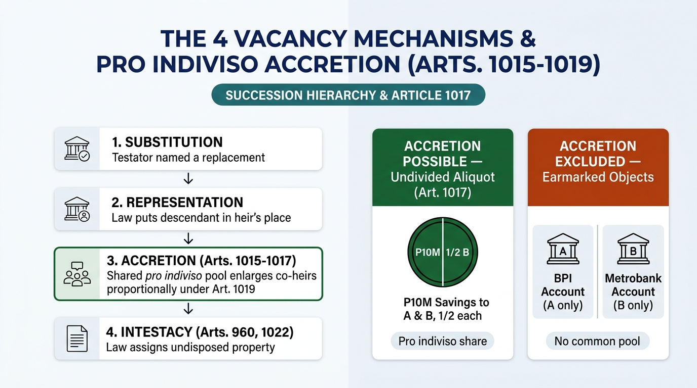
There are two express statutory requisites:
In applying these requisites, you must also check whether the testator has designated an effective substitute, and whether the failed share concerns the protected legitime or the disposable portion.
Pro indiviso simply means undivided.
Imagine three persons collectively own one parcel of land.
A owns one-third, B owns one-third, and C owns one-third.
Does that mean A owns the northern section, B the middle section, and C the southern section?
No.
Each owns an undivided fractional interest in the entire property, until a valid partition separates their interests.
That is pro indiviso ownership.
In succession, the same distinction matters because Article 1016 requires a common inheritance or portion to which the co-heirs were jointly called.
An aliquot portion is a mathematical fraction or proportion of a larger whole.
Article 1017 expressly provides that expressions such as "one-half for each" or "in equal shares" do not prevent accretion when they do not make the heirs exclusive owners of determinate property.
"I leave my ₱10 million savings to A and B, one-half each."
"I leave my BPI savings account to A and my Metrobank account to B."
Suppose B predeceases the testator in Example B.
Does A automatically receive the Metrobank account?
No. There is no accretion merely because both gifts appear in the same will.
What happens to the Metrobank account instead?
We check for a valid substitute, another effective testamentary disposition (such as a residuary heir), and the applicable rules on lapsed legacies or devises. If the property is not otherwise effectively disposed of, it passes under intestate succession.
Important correction to the shortcut in your notes: Lack of accretion does not always mean immediate intestacy. Articles 956, 960 and 1022 must also be considered.
The classic causes are:
These are the three grounds expressly enumerated in Article 1016.
Your notes also mention a failed suspensive condition and an unidentifiable heir under Article 845. Those are valid concerns in analyzing ineffective testamentary dispositions, but do not automatically treat them as additional Article 1016 grounds.
A failed suspensive condition is specifically addressed in Article 960(3), while Article 845 concerns the validity of dispositions to unknown persons. Their effects depend on the remaining testamentary provisions and applicable rules.
Suppose X's will gives a ₱60 million free portion as follows:
C predeceases X. There is no substitute and the disposition is pro indiviso.
Who absorbs C's ₱10 million?
A and B, in the proportion in which they inherit.
Their original shares are ₱30M and ₱20M, or 3:2.
Thus:
| Heir | Original | Share of C's ₱10M | Final |
|---|---|---|---|
| A | ₱30M | ₱6M | ₱36M |
| B | ₱20M | ₱4M | ₱24M |
| C | ₱10M | — | ₱0 |
| Total | ₱60M | ₱60M |
This is a frequent computation trap.
Accretion is not necessarily divided equally. Article 1019 requires that the vacant portion be taken in the same proportion in which the beneficiaries inherit.
Accretion carries more than economic benefit.
Under Article 1020, the heirs who receive the accrued inheritance succeed to the rights and obligations that the unsuccessful heir would have had.
For example, if an effective testamentary burden was imposed on C's share and that share accrues to A and B, the burden may accompany the accrued share.
Memory rule: The increased inheritance does not necessarily arrive free from its attached obligations.
Let's begin with a simple example.
X dies without a will. He leaves three legitimate children, A, B and C, all alive when X dies.
The net estate is ₱90 million.
Initially:
Now C repudiates his inheritance.
Under Article 977, C's children cannot represent C, because an heir who repudiates cannot be represented.
Under Article 1018, C's intestate share accrues to his co-heirs.
Therefore, A and B absorb C's ₱30 million equally:
This is true even if C has a child.
Why? Because the law does not permit representation of an heir who repudiates.
Completely different result.
Suppose C predeceased X and left two children, E and F.
Under Articles 970, 974 and 981, E and F may represent C.
Therefore:
| Heir | Basis | Share |
|---|---|---|
| A | Own right | ₱30M |
| B | Own right | ₱30M |
| E | Representation of C | ₱15M |
| F | Representation of C | ₱15M |
There is no vacant C branch to distribute to A and B. E and F take C's branch by representation.
Your professor's explanation distinguishes:
This is a useful classroom method for determining the resulting heirs.
One statutory nuance: Article 968 expressly uses the concept of accrual when one of several relatives of the same degree is unwilling or incapacitated to succeed, subject to representation. Thus, the statement that accretion can never operate in intestacy upon incapacity is too categorical.
For recitation, retain your professor's analytical distinction, but know that Articles 968 and 1018 must be read alongside the rules on representation.
Now suppose A, B and C all repudiate.
Can their respective children represent them?
No, under Article 977.
However, Article 969 allows relatives of the next degree to inherit in their own right, not by representing the repudiating children.
This is why the proposition "repudiation always accrues" must be understood alongside the exception where no eligible co-heir remains at that level.
Article 1021 is the reason we must distinguish between the legitime and the free portion in testate succession.
Suppose X leaves a ₱120 million estate and four legitimate children.
Assuming no surviving spouse, no other compulsory heirs affecting the computation, and no relevant donations:
Now imagine D repudiates.
What happens to D's ₱15 million legitime?
Does it simply accrue to A, B and C under Article 1016?
No.
Article 1021 expressly states:
Should the part repudiated be the legitime, the other co-heirs shall succeed to it in their own right, and not by the right of accretion.
This is an important difference even where the mathematical amounts may look identical.
When the legitime is repudiated, we determine the entitlement of the remaining qualified compulsory heirs under the law. We do not invoke testamentary accretion as the source of their rights.
But if D also receives a voluntary disposition from the free portion under the will, that disposition can be subject to the applicable rules on substitution and accretion.
The legitime is not a gift that depends solely on the testator's generosity.
It is a minimum hereditary entitlement protected by law.
That is why Articles 872 and 904 prohibit the testator from imposing a condition, burden, encumbrance or substitution upon the protected legitime.
The testator's freedom is broader regarding the disposable portion.
Remember:
And a further nuance: Article 1021's distinction concerning the legitime should not be confused with the operation of Article 1018 in pure intestate succession. In intestacy, we do not artificially divide each heir's legal share into an instituted legitime and a voluntarily devised free portion.
Your professor's matrix becomes much easier once you understand that we are dealing with three distinct situations.
| Cause | Testate legitime | Testate free portion | Intestate share |
|---|---|---|---|
| Predecease | Representation, if qualified; otherwise statutory redistribution | Substitute → Accretion → Intestacy | Representation, if qualified; otherwise legal heirs in their own right |
| Incapacity | Representation, if legally available; otherwise statutory redistribution | Substitute → Accretion → Intestacy | Representation, if qualified; otherwise statutory redistribution, considering Art. 968 |
| Repudiation | No representation or accretion of the legitime; other qualified heirs take in their own right | Substitute → Accretion → Intestacy | Accretion to qualified co-heirs; next degree in own right if Art. 969 applies |
The table summarizes the usual R-I-P cases. Each arrow remains subject to the relevant statutory requisites and other effective testamentary provisions.
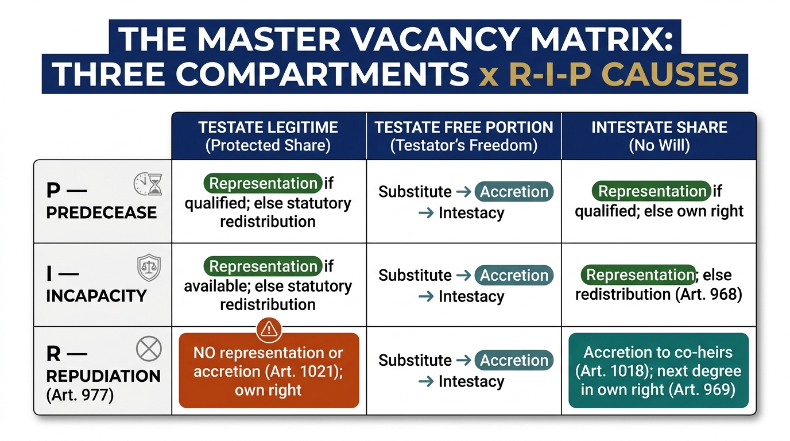
Suppose X's will states:
I institute A, B and C as heirs to my free portion in equal shares. Should C predecease me, D shall take C's place.
C dies before X.
Could A and B argue that C's one-third must accrue to them because they are his co-heirs?
No.
The testator already designated D as substitute.
Accretion cannot defeat that effective testamentary choice.
Under Article 859, a simple substitution without stated causes generally covers predecease, repudiation and incapacity, unless the testator provides otherwise.
Thus, always read the will first before invoking accretion.
Suppose X dies without a will, leaving A and B alive and C predeceased.
C has a daughter, E.
E legally represents C. Therefore, C's branch remains occupied, and A and B do not automatically absorb that branch.
Representation prevents the supposed vacancy from arising at the branch level.
Now contrast that with C repudiating while alive when X dies.
Article 977 prohibits E from representing C. The legal result changes because the reason C fails to inherit is repudiation rather than predecease.
We will solve this slowly and account for every peso.
X dies leaving a net hereditary estate of ₱120 million.
X has four legitimate children:
Additional assumptions:
We solve the testate and intestate scenarios separately, because they follow different rules.
For legitimate children inheriting without other compulsory heirs affecting the calculation, Article 888 reserves one-half of the hereditary estate as their collective legitime.
Because the will institutes the four children equally, the initial notional allocation is:
| Child | Legitime | Free portion | Baseline |
|---|---|---|---|
| A | ₱15M | ₱15M | ₱30M |
| B | ₱15M | ₱15M | ₱30M |
| C | ₱15M | ₱15M | ₱30M |
| D | ₱15M | ₱15M | ₱30M |
| Total | ₱60M | ₱60M | ₱120M |
This baseline is only our starting allocation, not the final distribution.
C was supposed to receive ₱30 million, composed of:
Question 1: What happens to C's legitime?
Since C predeceased X, C's qualified descendants E and F may represent C.
Therefore:
E receives ₱7.5M. F receives ₱7.5M.
Question 2: What happens to C's free portion?
The right of representation does not automatically extend to the voluntary testamentary disposition.
No substitute was designated, and the four children were instituted to an undivided inheritance.
Consequently, C's ₱15 million free-portion share accrues to accepting instituted co-heirs A and B, rather than passing automatically to E and F.
Each receives:
C's vacancy resolved
| E | +₱7.5M · Representation |
| F | +₱7.5M · Representation |
| A | +₱7.5M · Accretion |
| B | +₱7.5M · Accretion |
Notice the distinction: the same person's failed ₱30 million allocation produces two different legal mechanisms.
This is exactly why your professor insists on separating the legitime and free portion.
Now consider D.
D is alive when X dies but refuses the inheritance.
This is repudiation, not predecease.
What about G, D's child?
Under Article 977, G cannot represent D.
Thus:
But we must again separate D's legitime and free portion.
A. D's ₱15M legitime
Article 1021(2) prohibits accretion of the repudiated legitime as such.
The remaining qualified compulsory heirs inherit in their own right or through a valid existing representation, as applicable.
There are now three entitled family branches:
The ₱60 million collective legitime is allocated among these three branches.
Therefore, A's final legitime is ₱20M; B's is ₱20M; and C's represented branch receives ₱20M, divided between E and F at ₱10M each.
B. D's ₱15M free portion
Because D repudiated, and the will names no substitute, D's free-portion share accrues to A and B.
Each receives another:
We now add each beneficiary's entitlement.
| Beneficiary | Final legitime | Final free portion | Total |
|---|---|---|---|
| A | ₱20M | ₱30M | ₱50M |
| B | ₱20M | ₱30M | ₱50M |
| E | ₱10M | ₱0 | ₱10M |
| F | ₱10M | ₱0 | ₱10M |
| G | ₱0 | ₱0 | ₱0 |
| Total | ₱60M | ₱60M | ₱120M |
G receives nothing because D's repudiation cannot be remedied through representation.
This agrees with your supplied settled classroom testate answer.
Now remove the will completely.
Everything else remains the same.
X dies leaving the ₱120 million estate, with A and B alive, C predeceased, and D repudiating.
Since there is no will, we do not divide the estate into four individual ₱15M legitimes and four ₱15M voluntary free-portion allocations.
We apply the intestate succession rules to the estate as a whole.
If all four children had inherited, each branch would initially receive:
A receives ₱30M, B receives ₱30M, and C's branch is allotted ₱30M through representation by E and F.
D's initially expected share is ₱30M.
Under Articles 970, 974 and 981:
C's branch is an entitled branch because E and F legally represent C.
D repudiates his entire ₱30 million intestate share.
Under Article 977, G cannot represent D.
Article 1018 provides that the repudiated share accrues to the co-heirs. Under Articles 971 and 974, E and F are direct heirs of X by representation and collectively occupy C's branch.
The three remaining branches are therefore:
Applying Article 1019 proportionately, the repudiated ₱30 million is divided among those three equally entitled branches.
Therefore:
| Beneficiary | Original entitlement | Additional share | Final |
|---|---|---|---|
| A | ₱30M | ₱10M | ₱40M |
| B | ₱30M | ₱10M | ₱40M |
| E | ₱15M | ₱5M | ₱20M |
| F | ₱15M | ₱5M | ₱20M |
| G | ₱0 | ₱0 | ₱0 |
| Total | ₱90M | ₱30M | ₱120M |
The conclusion follows from the statutory rule that representatives inherit from the original decedent and occupy the place of the represented heir.
That calculation gives D's entire ₱30 million share exclusively to A and B.
However, E and F are not strangers to X's intestate succession. They represent C and are called by law to X's estate.
They are entitled to participate through C's branch when D's portion is distributed.
There is also a difference between your linked Figure 18 and the written ₱120M problem: the figure illustrates separate three-child scenarios, while your text involves four children, including a predeceased C who has two representatives. The calculations should not be carried over without accounting for that additional branch.
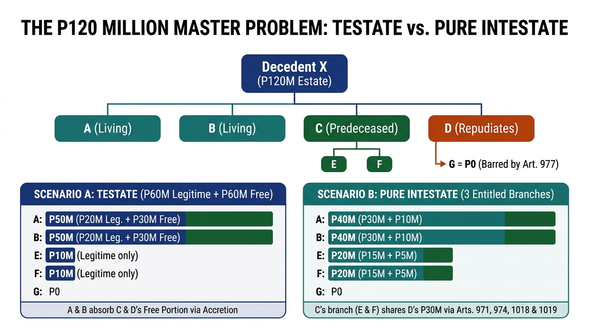
| Heir | Testate | Pure intestate | Difference |
|---|---|---|---|
| A | ₱50M | ₱40M | +₱10M in testate |
| B | ₱50M | ₱40M | +₱10M in testate |
| E | ₱10M | ₱20M | −₱10M in testate |
| F | ₱10M | ₱20M | −₱10M in testate |
| G | ₱0 | ₱0 | None |
| Total | ₱120M | ₱120M |
Why do A and B receive more in the testate scenario?
Because the will instituted A, B, C and D as heirs to the free portion. When the free-portion shares of C and D failed, the right of accretion increased A's and B's testamentary allocations.
E and F retained their rights to the protected legitime through representation, but they did not automatically inherit C's voluntary testamentary share.
In the pure intestate scenario, the estate was distributed under the law without separate testamentary allocations of the free portion.
That is the underlying explanation for the different results.
Change the original will slightly.
Instead of simply naming A, B, C and D, X states:
I designate H as substitute for C should C predecease me.
Assume the substitute designation validly operates as to C's disposable share.
C predeceases X.
What happens?
The revised testate distribution would be:
| Heir | Final |
|---|---|
| A | ₱42.5M |
| B | ₱42.5M |
| E | ₱10M |
| F | ₱10M |
| H | ₱15M |
| G | ₱0 |
| Total | ₱120M |
Notice what changed: A and B no longer absorb C's ₱15 million free-portion share, because the testator appointed H.
That single testamentary clause overrides the presumed disposition under accretion.
This is a very important additional trap.
Imagine X dies on January 1, 2026. His son A is alive at that time.
A dies on January 10, 2026, without accepting or repudiating the inheritance.
Does A's share accrue to his co-heirs because A has died?
No.
A did not predecease X. A was alive when X's succession opened.
Under Article 777, A acquired hereditary rights upon X's death. Under Article 1053, if an heir dies without accepting or repudiating the inheritance, the right to accept or repudiate passes to that heir's own heirs.
This is a different legal mechanism from representation and accretion.
| Timing | Appropriate analysis |
|---|---|
| A dies before X | Consider representation, substitution, accretion or intestacy |
| X dies while A is alive; A subsequently dies | Consider Arts. 777 and 1053 |
| A survives X but repudiates | Apply the rules on repudiation and the resulting vacancy |
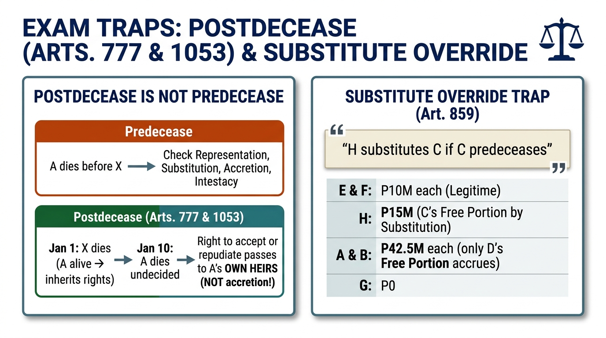
Suppose X leaves the entire free portion to A and B, equally.
A and B both predecease X, and there are no designated substitutes or other effective testamentary provisions disposing of those shares.
Can A's share accrue to B and B's share accrue to A?
No. Neither can receive the inheritance.
There must be a qualified recipient for accretion to operate.
Consequently, the undisposed property passes to the appropriate legal heirs under Articles 960 and 1022.
Accretion cannot operate when nobody capable of receiving the accrued portion remains.
Three phrases should stay in your memory:
A fourth phrase is important for computations:
Let's test whether you understand the hierarchy rather than just memorizing the matrix.
Without looking at the answer table, explain this question in your own words:
Why do E and F inherit only ₱10 million each in the testate ₱120 million scenario, but ₱20 million each in the pure intestate scenario, even though their parent C predeceased X in both situations?
Try answering using ALAC: Answer, Law, Application, Conclusion.
That explanation is the real test of whether you have mastered the relationship between representation, accretion, legitime, free portion and intestate succession.
| Mnemonic / Cue | Source | Rule & Statutory Anchor |
|---|---|---|
| R-I-P | Lecture | Qualifying causes for testamentary accretion (Art. 1016): Repudiation, Incapacity, Predecease. |
| 4-Phrase Memory System | Lecture | (1) "The legitime is protected"; (2) "The will's substitute comes first"; (3) "A repudiating heir cannot be represented"; (4) "Count family branches before counting grandchildren." |
| Burdens Follow Benefit | Lecture | Art. 1020: Accrued share does not necessarily arrive free from attached testamentary obligations. |
| S → R → A → I (Read the Will First) | Study Aid | Order of triage in free portion: Substitution (Art. 859) → Accretion (Art. 1016) → Intestacy (Arts. 960, 1022). In intestacy, Representation blocks branch vacancy before accretion. |
You have only 5 hours left, so we're going to study differently. Instead of memorizing every paragraph, we're going to master the legal distinctions that allow you to answer several exam questions with one rule.
Imagine a father who dies leaving ₱12 million.
His will gives property to his unborn grandchild, his attending doctor, and his brother who previously committed a serious offense against him.
Can all three inherit?
Not necessarily. Before calculating inheritance shares, we must determine whether each beneficiary is legally qualified.
The most important distinction:
| Incapacity under Art. 1027 | Unworthiness under Art. 1032 |
|---|---|
| Prohibits specified testamentary dispositions. | Disqualifies from both testate and intestate succession. |
| Ordinarily does not remove an independent right to the legitime. | Can remove even the legitime. |
| Focuses on prohibited relationships and circumstances. | Focuses on serious statutory misconduct. |
Memory shortcut: Article 1027 asks, "Was this gift legally prohibited?" Article 1032 asks, "Has this person forfeited the right to inherit?"
Arts. 40, 41, and 1025
A child already conceived when the decedent dies may inherit, provided the child is subsequently born under the conditions required by Article 41.
There are only two situations to memorize:
| Intrauterine life | Requirement |
|---|---|
| Less than 7 months | Born alive and survives the first 24 hours after complete delivery. |
| 7 months or more | Born alive upon complete delivery. No additional 24-hour survival requirement. |
Important correction to your notes: The statutory starting point is complete delivery from the mother's womb, not necessarily the cutting of the umbilical cord.
A father and son die in the same accident. Nobody can prove who died first.
The law presumes that they died at the same time.
Consequently, neither inherits from the other.
But suppose the son left a daughter, and the grandfather's estate is being settled.
The granddaughter may inherit from her grandfather by representation, if the requisites are met.
Why? She acquires rights directly from her grandfather, not through an inheritance first received by her father.
Remember: No transmission between presumed simultaneous decedents does not automatically prevent representation.
Imagine a wealthy man who is seriously ill. He knows he might die soon.
He gives ₱5 million in his will to his attending physician.
Why does the law prohibit this?
Because the doctor occupies a position of trust and influence over a vulnerable patient. The law prohibits certain testamentary gifts without requiring proof that the doctor actually pressured the testator.
This is incapacity by reason of possible undue influence.
Mnemonic: P–R–G–W–M + other legally disqualified persons
| Art. 1027 | Disqualified beneficiary | Critical condition |
|---|---|---|
| (1) Priest / Minister | Priest who heard confession; minister who gave spiritual aid | During the last illness |
| (2) Relatives / Religious institution | Relatives within 4th degree; church or religious institution of the qualifying priest/minister | Derived from (1) |
| (3) Guardian | Guardian receiving a gift from the ward | Gift made before approval of final accounts |
| (4) Witness | Attesting witness, spouse, parents, children, and persons claiming under them | Subject to Art. 823 exception |
| (5) Medical personnel | Physician, surgeon, nurse, health officer, druggist | Actually cared for the testator during last illness |
| (6) Others | Persons or entities prohibited by law from inheriting | As provided by law |
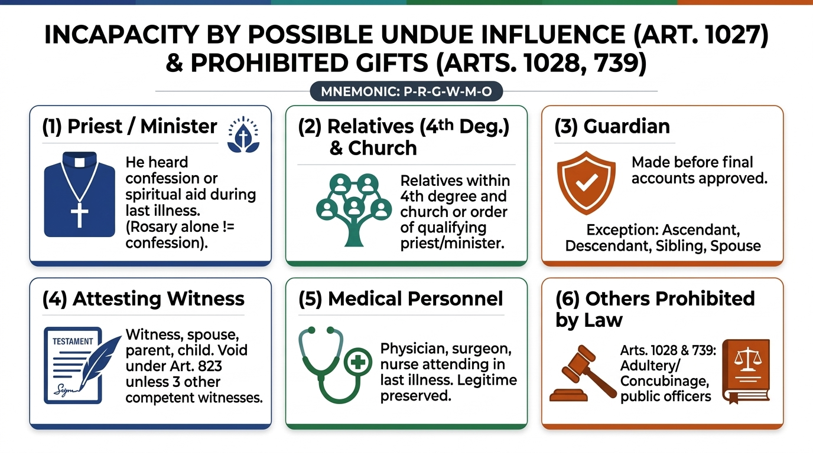
A Catholic priest visits the dying testator and prays the Rosary with him. The testator leaves him ₱2 million.
Is the priest automatically disqualified?
Under the express wording of Art. 1027(1), not merely because he prayed the Rosary. The prohibition identifies a priest who heard confession during the last illness. For a minister of the gospel, it identifies one who extended spiritual aid.
Your professor's discussion may consider the broader meaning of spiritual aid, but do not casually treat Rosary prayers as the statutory equivalent of sacramental confession by a priest.
Exam trigger: Identify exactly what religious act occurred, who performed it, and when.
A grandmother is the legal guardian of her grandson. Before her guardianship accounts are approved, the grandson makes a valid will leaving her property.
Is the testamentary gift prohibited?
No. Article 1027(3) expressly exempts a guardian who is the ward's ascendant, descendant, brother, sister, or spouse.
Now replace Grandma with an unrelated guardian.
The gift is prohibited, even if the accounts are approved later, before the testator dies.
The controlling event is the time the testamentary disposition was made, not merely the time of death.
A testator executes a notarial will with three witnesses: A, B, and C.
The will gives Witness A ₱500,000.
Does A lose the gift?
Yes, under Art. 823, because there are not three other competent witnesses.
Now add Witness D, giving us four competent witnesses in total.
The gift to A can be valid because B, C, and D are three other competent witnesses.
Notice the difference: the witness's disqualification to receive the gift does not by itself disqualify that person from attesting the will.
This is where your professor's teaching and the literal statutory wording must be distinguished.
Hypothetical
Father is dying. His son, a physician, personally attends to him during the last illness. Father makes a will giving the son his legitime and an additional gift from the free portion.
Strict statutory interpretation: Article 1027(5) contains no express family-member exception. The additional testamentary gift is prohibited; the son's independent right to his legitime remains.
Your professor's preferred interpretation: A close family member performing a familial duty should not lose the testamentary gift merely because that person also provided medical or spiritual care.
For examinations, identify both interpretations if the question raises this controversy. The family-duty exemption is an interpretive position, not an express exception in Article 1027(5). The guardian exception, by contrast, is expressly provided by law.
Let's use a ₱120 million example.
Assume the father leaves an only legitimate son, who is his attending physician.
Under the strict interpretation, the son retains his ₱60M legitime, while the prohibited additional testamentary gift fails. If the free portion consequently passes by intestacy and the son is the sole legal heir, he may still receive it by intestate succession.
Crucial: Do not automatically award the free portion to the son in every case. Check whether substitution, accretion, another valid testamentary disposition, or intestate succession applies.
Here's another frequent trap.
A married man gives his mistress ₱3 million in his will while they are maintaining an adulterous relationship.
Is it valid merely because the mistress did not exert undue influence?
No. Article 1028 applies the prohibitions in Article 739 to testamentary dispositions.
| Art. 739 | Prohibited dispositions |
|---|---|
| (1) | Between persons guilty of adultery or concubinage at the relevant time |
| (2) | Between persons found guilty of the same criminal offense, in consideration of it |
| (3) | To a public officer, or specified immediate relatives, by reason of the officer's position |
Under Art. 739(1), the wrongdoing may be established by preponderance of evidence in the action for nullity; a prior criminal conviction is not an indispensable prerequisite.
Memorize the distinction: Article 739 concerns a prohibited gift. Article 1032 concerns unworthiness to inherit.
Imagine a son who attempts to kill his father because he wants the inheritance.
The son is ultimately convicted of the attempt. His father later dies intestate.
Can the son still demand his legitime?
No, if the statutory ground of unworthiness applies and has not been effectively pardoned.
Unlike the prohibitions against particular testamentary gifts under Article 1027, unworthiness excludes a person from succession itself, including the legitime.
Instead of eight disconnected provisions, remember the following structure:
| Category | Art. 1032 | Ground |
|---|---|---|
| Family misconduct | (1) | Parents abandoning children, inducing daughters into an immoral life, or attempting against their virtue |
| Attack on life | (2) | Convicted attempt against the life of the testator, spouse, ascendant, or descendant |
| False accusation | (3) | Accusing the testator of a crime punishable by imprisonment of 6 years or more, where the accusation is found groundless |
| Failure to report | (4) | Adult heir knowingly fails to report the testator's violent death within 1 month, subject to statutory exceptions |
| Adultery / Concubinage | (5) | Convicted of adultery or concubinage with the testator's spouse |
| Manipulating a will | (6) | By fraud, violence, intimidation, or undue influence, causes testator to make/change a will |
| Preventing / altering a will | (7) | Through specified wrongful means prevents making/revoking a will, or supplants, conceals, or alters it |
| Forgery | (8) | Falsifies or forges a supposed will |
Memory sequence: Bad parent → Life → Accusation → Silence → Affair → Forced will → Blocked will → Forged will.
Imagine:
Husband H is married to Wife W. Wife W commits adultery with H's brother, B. Both W and B are convicted. H then dies intestate.
Who is unworthy?
This is why the wording matters.
Does W automatically get 100% of H's estate?
Not necessarily! Your notes omit an important qualification.
If W is the sole remaining qualified intestate heir, and there is no separate legal impediment, she may inherit the entire estate.
However, if other qualified brothers, sisters, or their children survive, Art. 1001 generally gives the spouse one-half and those collateral heirs the other half. An offending spouse's rights may also be affected by legal separation and other applicable rules.
Your professor's practical point: The offended spouse may consider disinheritance through a valid will, using Article 921(4), when the spouse has given cause for legal separation. But the cause must be established, and disinheritance must satisfy the governing requirements.
This distinction is especially important in problem questions.
The father survives. Years later, they reconcile.
Does the son regain his right to inherit?
It depends on whether we are dealing with unworthiness or disinheritance.
| Art. 1033 — Unworthiness | Art. 922 — Disinheritance | |
|---|---|---|
| Governs | Statutory causes of unworthiness | Disinheritance |
| How cured? | Knowledge of the offense when making the will, or subsequent written condonation | Subsequent reconciliation |
| Is verbal forgiveness sufficient? | Generally, no | Reconciliation may be sufficient |
| Essential distinction | Statutory pardon | Restoration following reconciliation |
Important nuance: If the same conduct independently constitutes unworthiness, cancellation of disinheritance under Art. 922 should not automatically be treated as satisfying Art. 1033. Analyze both provisions.
Memory aid: 1033 = Knowledge or Writing; 922 = Reconciliation.
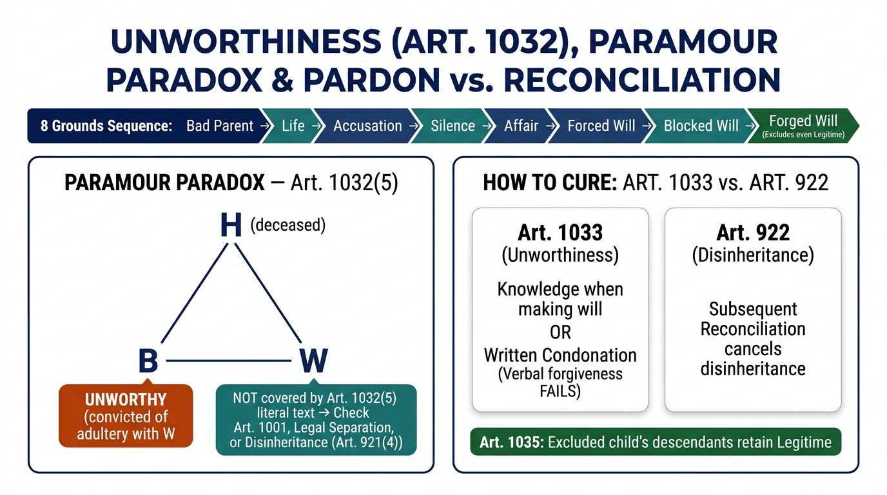
These are comparatively straightforward. Learn their operative rules rather than spending too much time memorizing their full statutory text.
| Article | Essential rule |
|---|---|
| 1026 | Qualified juridical persons, charitable associations, and similar entities may receive testamentary dispositions. |
| 1029 | General, unspecified gifts for prayers and pious works for the soul: one-half to the testator's church/denomination, one-half to the State for Art. 1013 purposes, with executor and court approval. |
| 1030 | General gifts to the poor ordinarily benefit the poor of the testator's domicile at death, unless a different intention clearly appears. |
| 1031 | A prohibited testamentary gift cannot be saved by disguising it as an onerous contract or giving it through an intermediary. |
| 1034 | Capacity assessed at death; if conditional, also at fulfillment. Special timing applies to Art. 1032(2), (3), (4), and (5). |
| 1035 | Descendants of an excluded child/descendant acquire the latter's right to the legitime. |
| 1036 | Protects certain good-faith third-party transactions before judicial exclusion; damages may still be recovered from the excluded heir. |
| 1037 | Unworthy heir may recover preservation expenses and enforce valid credits against the estate. |
| 1038 | Disqualified possessor must return hereditary property, accessions, and applicable fruits and rents. |
| 1039 | National law of the decedent governs capacity to succeed. |
| 1040 | Action for declaration of incapacity and recovery: 5 years from the disqualified person's taking possession. |
A grandfather dies, leaving a son and a grandson.
The son is unworthy.
Does that mean the grandson automatically loses his grandfather's inheritance too?
No. Article 1035 protects descendants by allowing them to acquire the excluded parent's right to the legitime.
The excluded parent also loses the right to administer or enjoy the usufruct of the property inherited by those descendants.
This connects directly to your earlier lessons on representation and the legitime.
These matters are governed, under the Philippine conflict-of-laws rules, by the national law of the decedent, regardless of the property's location.
Do not confuse this with the separate rules on formal validity of wills or the general lex rei sitae principle for property.
Answer these without looking back. They test the distinctions most likely to cause mistakes.
Before answering any problem on capacity to succeed, remember:
| Art. 1025 | Alive at death; conceived-child exception |
| Art. 1027 | Prohibited testamentary beneficiaries |
| Art. 1028 + 739 | Prohibited immoral or public-office-related gifts |
| Art. 1032 | Unworthiness, including loss of legitime |
| Art. 1033 | Knowledge when making will / written condonation |
| Art. 922 | Reconciliation defeats disinheritance |
| Art. 1034 | Capacity at death and, if applicable, condition fulfillment |
| Art. 1035 | Excluded child's descendants retain legitime rights |
| Art. 1039 | Decedent's national law |
| Art. 1040 | 5-year action from possession |
With your limited study time, do not spend another hour memorizing every word of this chapter. Aim to understand the distinctions, complete the four questions, and move on to Acceptance and Repudiation (Arts. 1041–1057).
The central lesson is this: A person might be alive and capable of inheriting, yet prohibited from receiving a particular testamentary gift. A person who is unworthy, however, can lose the inheritance itself—even the legitime.
| Mnemonic | Source | Rule & Articles |
|---|---|---|
P–R–G–W–M (+ Others) |
Lecture | Art. 1027: Priest/Minister, 4th-deg Relatives/Church, Guardian, Witness + kin, Medical personnel, plus others barred by law. |
Bad parent → Life → Accusation → Silence → Affair → Forced will → Blocked will → Forged will |
Lecture | The 8 sequential grounds of unworthiness under Art. 1032(1)–(8). |
| 1033 = Knowledge or Writing; 922 = Reconciliation | Lecture | Pardon of unworthiness (Art. 1033) vs. restoration of disinheritance (Art. 922). |
O–A–I–C |
Lecture | National law of decedent (Arts. 16, 1039): Order, Amount, Intrinsic validity, Capacity to succeed. |
Gift vs. Status |
Study Aid | Art. 1027 disqualifies only the free-portion gift (legitime intact); Art. 1032 forfeits succession itself (testate, intestate, and legitime). |
Imagine your father dies and leaves you an inheritance worth ₱3 million.
You are his legitimate child. You are alive, legally qualified to inherit, and not disqualified by unworthiness.
Does this mean you must accept the ₱3 million?
NO. The law does not force you to accept an inheritance.
You have two choices:
But suppose you say:
"I don't want the inheritance. Give my entire ₱3 million share to my favorite brother."
Is that really repudiation?
Not necessarily! You may already have legally accepted the inheritance and then transferred it to your brother.
And what if you owe ₱1 million to creditors and you renounce your inheritance just to avoid paying them?
The law protects your creditors.
That is essentially what Articles 1041–1057 regulate.
Think of these as the foundation for everything else.
| Article | Essential rule | Remember |
|---|---|---|
| 1041 | Acceptance or repudiation is purely voluntary and free. | Nobody can force the choice. |
| 1042 | Its effects retroact to the decedent's death. | The effect goes back in time. |
| 1043 | You must be certain of the death and of your right to inherit. | Death + Right |
| 1056 | Once validly made, the choice is generally irrevocable. | You cannot simply change your mind. |
The effects of your March acceptance are carried back to the date of your father's death.
Why? Because succession operates upon death. The law avoids an ownership gap merely because the heir has not immediately decided.
Exam trap: Retroactivity does not mean that the heir is required to accept immediately upon death.
Question: Can an heir repudiate an inheritance while the testator is still alive?
Answer: No. Under Article 1043, a person cannot accept or repudiate an inheritance without certainty of the decedent's death and of the person's right to inherit. A mere future expectation of inheritance cannot be repudiated under these provisions.
This is the most important cluster for problem-solving: Articles 1049–1052.
Imagine you inherit a house from your father.
There are three possible situations:
| Your action | Legal effect | Why? |
|---|---|---|
| You sign a written document accepting the house. | Express acceptance | You directly declare your intention. |
| You sell your hereditary rights over the house to another person. | Tacit/deemed acceptance | You exercised a right belonging to an heir. |
| You repair the leaking roof to prevent the house from deteriorating. | Not necessarily acceptance | This may be mere preservation. |
Here is the distinction:
Preserving property is different from exercising ownership as an heir.
Suppose your father died and you immediately paid the electricity bill, secured the property, and arranged emergency roof repairs. These acts alone do not necessarily mean you have accepted the inheritance, provided you have not assumed the title or capacity of an heir.
But if you sell your hereditary rights, you are exercising a power that presupposes acceptance.
Recitation question: Is acceptance required to be in a notarized document?
No. Under Article 1049, express acceptance may be made in a public or private document. Acceptance may also be tacit.
Unlike acceptance, repudiation cannot be merely tacit.
If you want to reject the inheritance, Article 1051 requires one of the following:
Example: Your father dies. You tell your siblings, "I don't want anything. You can have everything."
Is that valid repudiation?
No. A verbal statement alone does not satisfy Article 1051.
Remember this distinction:
This is a favorite type of succession hypothetical because the facts may call the document a waiver, but the legal consequences are different.
Suppose a father dies, leaving three children:
Assume each is entitled to an equal share, and no other legal consideration changes their entitlement.
Now Ana wants to waive her share.
| What Ana does | Legal result |
|---|---|
| Sells her hereditary rights to Ben for ₱1 million. | Deemed acceptance |
| Gratuitously waives her share specifically in favor of Ben. | Deemed acceptance |
| Waives her share for payment from Ben and Carlo together. | Deemed acceptance |
| Gratuitously renounces in favor of Ben and Carlo, who are exactly the persons entitled to her share by accretion. | Not deemed accepted under Art. 1050 |
Think about what Ana is doing.
The last rule requires both gratuitousness and that the beneficiaries be the proper co-heirs under accretion. Merely including all co-heirs by name is not a substitute for checking who is legally entitled.
Memory aid: PRICE or PREFERENCE = ACCEPTANCE.
Now imagine that Ana's situation is different.
Ana has inherited a share worth ₱3 million, but she owes ₱1 million to a creditor.
She thinks:
"If I accept the inheritance, my creditor may collect. I'll repudiate everything instead!"
Can she escape her debt this way?
No. Article 1052 protects the creditor.
With judicial authorization, creditors prejudiced by the repudiation can accept the inheritance in the heir's name, but only to the extent needed to satisfy their credits.
Why doesn't Ana get the remaining ₱2 million?
Because she repudiated the inheritance. Article 1052 protects creditors; it does not cancel the renunciation for Ana's personal benefit.
Under Article 1052, where an heir repudiates an inheritance to the prejudice of his creditors, the latter may petition the court for authority to accept the inheritance in the heir's name. Such acceptance benefits the creditors only to the extent of their credits, and any excess belongs to the persons entitled under succession law, never to the renouncing heir.
Important distinction: This provision addresses the heir's own creditors, not the creditors of the deceased estate.
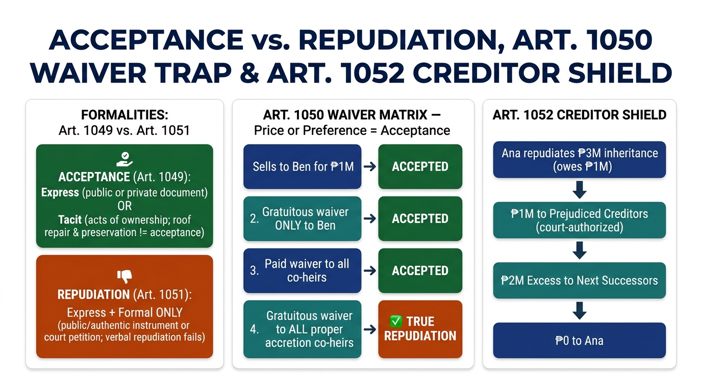
The main question is not merely whether someone is qualified to inherit.
It is whether that person has the legal capacity to personally exercise the choice.
A 10-year-old child can inherit ₱5 million from a deceased parent.
But can that child independently sign a binding repudiation of the inheritance?
No. The child may inherit, but the law protects the child's right to accept or reject.
| Person | Who accepts? | Who repudiates? |
|---|---|---|
| Adult with full legal capacity | Personally | Personally |
| Minor / incapacitated ward | Parent or guardian | Parent or guardian with judicial authorization |
| Qualified corporation or association | Lawful representative | Representative with court approval |
| Public official establishment | With government approval | With government approval |
| Married adult woman | Personally | Personally, without husband's consent |
Other provisions to recognize: Under Art. 1048, the Code uses the historical term deaf-mutes and distinguishes those who can read and write from those who cannot; its application should be read alongside modern rules on legal capacity and disability. For inheritance left to the poor, Art. 1044 in relation to Art. 1030 provides a special mechanism for determining beneficiaries and accepting the inheritance.
Facts (simplified): A mother executed a release and waiver of claims involving her minor children, without judicial authorization. The supposed waiver was invoked against the children's claimed hereditary rights.
Issue: Can a parent validly waive a minor child's inheritance without judicial authorization?
NO — the purported waiver was void.
Ruling: Under Article 1044, parents or guardians cannot repudiate a ward's inheritance without judicial authorization. The Supreme Court also emphasized the need for knowledge of the right allegedly waived.
G.R. No. 163707, September 15, 2006.
Exam shortcut: Parents can generally ACCEPT for a minor, but they cannot REPUDIATE for a minor without court authorization.
Why the difference? Acceptance is ordinarily beneficial; repudiation surrenders a valuable hereditary right.
This connects directly with your previous lesson on representation.
The key is a single question:
Did the original heir survive the decedent?
Imagine:
Now consider two scenarios.
Important: In transmission, C must be an heir who succeeds to B's estate and accept that succession in order to exercise the transmitted right. The option derives from B, not from C representing B.
And Art. 1054 tells us that when several heirs are called to an inheritance, some may accept while others repudiate. The choice need not be unanimous.
| Representation | Transmission |
|---|---|
| Original heir predeceased the decedent (or another statutory ground exists). | Original heir survived the decedent but died undecided. |
| Representative is called directly by law to succeed the decedent. | Right of acceptance or repudiation passes through the deceased heir. |
| Art. 970 | Art. 1053 |
Memory aid: Representation = BEFORE. Transmission = AFTER, but undecided.
This rule looks complicated, but the key is that the two directions are not treated equally.
Suppose A's father dies. A is called to inherit under the will, but could also inherit by intestacy as to property not effectively disposed of by the will.
Why the difference? The law expressly preserves the second possibility when A did not know about the testamentary call. But when A rejects in the testamentary capacity, the statute treats that as rejecting both capacities.
This is the literal rule in Article 1055. Your note's broader Paras commentary concerning prior knowledge should not replace the express statutory qualification in an exam answer.
Here is the easiest way to memorize the distinctions.
Suppose your father disappears. No one knows whether he is alive.
When can his succession be opened on the basis of presumptive death?
| Situation | Period |
|---|---|
| Ordinary absence: presumption for purposes other than succession | 7 years |
| Ordinary absence: for opening succession | 10 years |
| Disappeared after age 75: for opening succession | 5 years |
| Disappearance in the specified danger-of-death circumstances | 4 years |
Under Article 391, the four-year rule covers persons aboard a lost vessel or missing aircraft, members of the armed forces missing in war, and persons exposed to other circumstances involving danger of death.
Very important: Seven years of ordinary absence does not by itself open succession.
Assume the father's estate was distributed after the applicable period, but he later returns alive.
He can recover:
However, he cannot claim the fruits or rents contemplated by Article 392.
Think of it this way: The property may come back, but not the past income.
Imagine you executed a valid deed repudiating your inheritance worth ₱5 million.
Three months later, you discover that the inheritance is now worth ₱12 million.
Can you say, "I changed my mind. I want it back"?
No. Acceptance and repudiation, once validly made, are irrevocable.
But Article 1056 provides two exceptions.
| Exception | Example |
|---|---|
| Vitiated consent | You repudiated because of fraud, intimidation, violence, mistake, or undue influence. |
| Appearance of an unknown will | A previously unknown will is discovered, providing a statutory basis to challenge the earlier choice. |
Exam trap: Simply regretting your decision because the inheritance became more valuable is not a ground for revocation.
A threat to enforce a lawful claim through proper legal proceedings does not, by itself, constitute intimidation under Article 1335.
This is another provision you should memorize almost word for word.
The thirty-day period runs from the court's order for the distribution of the estate, NOT from the decedent's death.
Keep this separate from Article 1049's tacit acceptance through conduct. Art. 1057 creates a statutory deemed acceptance through failure to signify a choice after the specified court order.
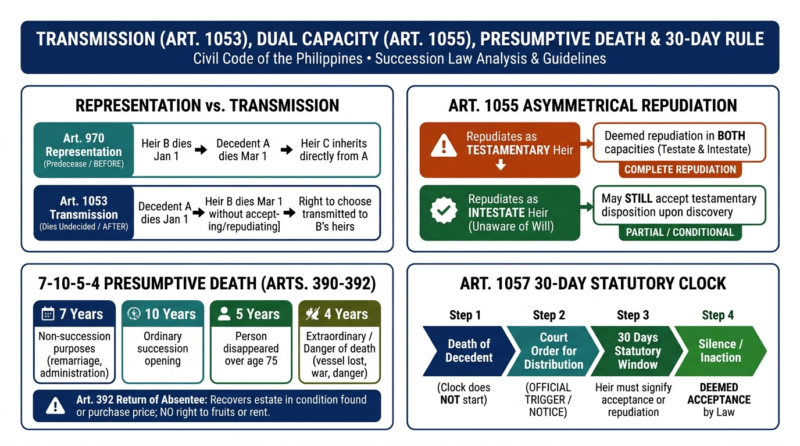
You do not need to overcomplicate this part.
The law does not permit a legatee or devisee to take the benefits and simply reject a connected onerous obligation where Articles 954–955 prohibit separating them.
| Scenario | Can the beneficiary do it? |
|---|---|
| Accept the beneficial part of one legacy but reject its onerous part | No, Art. 954 |
| Accept a gratuitous legacy but reject a separate onerous legacy | No, Art. 955 |
| Choose between two separate gratuitous legacies | Generally yes, unless intended to be inseparable |
| Compulsory heir rejects the inheritance but accepts a separate legacy | Yes, Art. 955 |
Example: The testator gives you a car and a separate ₱500,000 legacy carrying an obligation, such as maintaining a property. You cannot necessarily take the car while refusing the onerous legacy.
Important correction to your notes: Article 1041 itself states that acceptance or repudiation is voluntary and free; it does not expressly establish an unlimited right to accept or reject arbitrary portions of one inheritance. Your Paras reference concerning partial acceptance should be treated as commentary, not confused with the express distinctions in Articles 954–955 or the individual choices of separate heirs under Article 1054.
If you remember only one table from this lesson, make it this one.
| Article | Trigger words | Rule |
|---|---|---|
| 1041 | Free choice | Voluntary acceptance or repudiation |
| 1042 | Retroactive | Effective from death |
| 1043 | Death + right | Certainty required |
| 1044 | Minor / ward | Repudiation needs judicial authority |
| 1045 | Corporation | Court approval to repudiate |
| 1046 | Public establishment | Government approval |
| 1047–48 | Special capacities | Personal choice / representation rules |
| 1049 | Express / tacit | Preservation ≠ acceptance |
| 1050 | Selective waiver | May be deemed acceptance |
| 1051 | Formal repudiation | Public/authentic instrument or court petition |
| 1052 | Creditors | Judicial acceptance to cover credits |
| 1053 | Death undecided | Transmission |
| 1054 | Multiple heirs | Independent choices |
| 1055 | Will + intestacy | Asymmetric repudiation rule |
| 1056 | Irrevocable | Vitiated consent / unknown will |
| 1057 | 30 days | From court's distribution order |
These are application questions. Try answering before looking back at the lesson.
Think of an inheritance as an offer that comes with legal consequences.
You must be entitled to receive it, you may accept or formally reject it, you cannot disguise a transfer as a repudiation, and you generally cannot reverse a valid choice.
For your remaining study time, prioritize Arts. 1049–1053 and 1055–1057. These are especially useful for issue-spotting because one changed fact—payment, a selected beneficiary, the date of death, or the discovery of a will—can change the answer entirely.
Once you can explain those distinctions without looking at the table, move on to your next topic rather than spending too long memorizing the wording of every provision.
| Mnemonic | Source | Rule & Articles |
|---|---|---|
Death + Right |
Lecture | Art. 1043: Must be certain of both the decedent's death and your right to inherit before accepting or repudiating. |
PRICE or PREFERENCE = ACCEPTANCE |
Lecture | Art. 1050: Receiving consideration or selecting specific co-heirs converts a "waiver" into deemed acceptance. |
Representation = BEFORE; Transmission = AFTER, undecided |
Lecture | Art. 970 vs. Art. 1053: Check whether the original heir died before or after the decedent. |
7 – 10 – 5 – 4 |
Lecture | Presumptive death (Arts. 390–391): 7 non-succession; 10 ordinary succession; 5 after age 75; 4 danger of death. |
30 Days From Court Order (NOT Death) |
Study Aid | Art. 1057: Silence for 30 days after the court's order for distribution triggers deemed acceptance. |